Each challenge is a short situation that tests whether you really understand the biology. Choose an answer and a reason before you open the answer. Each answer ends by clearing up the usual misconceptions. Challenges you have opened are marked Done, saved only in this browser.
- Unit 1 Body Systems35 challenges
- Unit 2 Plant Systems12 challenges
- Unit 3 Genetics15 challenges
- Unit 4 Biomolecules21 challenges
- Unit 5 Cells13 challenges
- Unit 6 Biodiversity15 challenges
- Unit 7 Ecosystems15 challenges
Unit 1 Body Systems
B3.1 Gas exchange (Animal)
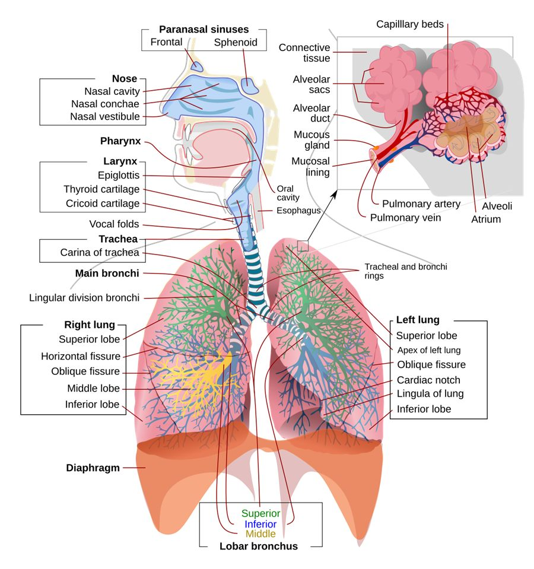
What is in the air you breathe out?

The air you breathe in is about 21% oxygen and 0.04% carbon dioxide. What is the air you breathe out mostly made of?
Choose an answer, and decide why, before you open the answer.
Show the answer
B. Mostly nitrogen, and it still holds about three-quarters of the oxygen you breathed in.
Nitrogen makes up about 78% of air. Your body neither uses it nor makes it, so it goes in and comes out unchanged. In each breath only part of the oxygen diffuses into the blood: breathed-out air is still about 16% oxygen, while carbon dioxide rises from 0.04% to about 4%.
Oxygen diffuses only while the air in the alveoli has a higher concentration of oxygen than the blood arriving there. Each fresh breath mixes with air already in the lungs, and blood moves on before it has taken all the oxygen. The oxygen left over is the reason rescue breaths in first aid can keep someone alive.
Clearing up misconceptions
"We breathe in oxygen and breathe out carbon dioxide" is a handy shortcut, but both breaths are mostly nitrogen. Gas exchange changes the proportions by a few percent. It does not swap one gas for the other.
The amoeba and the elephant
.jpg){kind=link}
An amoeba gets all its oxygen by diffusion through its cell surface. An elephant needs lungs. What is the main reason?
Choose an answer, and decide why, before you open the answer.
Show the answer
B. Size. A big body has too little surface for its volume, and its cells are too far from that surface.
As an organism gets bigger, its volume grows faster than its surface area. Double the length of a cube and its surface area becomes 4 times bigger, but its volume 8 times bigger. An elephant's skin has far too little area for all the respiring tissue inside it, and most of its cells are many centimetres from the surface.
Diffusion is quick over a few micrometres but very slow over centimetres. Large animals solve both problems with a specialised exchange surface, the lungs, which have a huge area and very thin walls, and with a blood system that carries the gases the rest of the way.
Clearing up misconceptions
A is the tempting answer, but it is the wrong way round: for each kilogram, an elephant uses much less oxygen than a mouse, because small animals have faster metabolic rates. The problem is the supply route, not the demand. C is wrong too: an amoeba respires aerobically, just as your cells do.
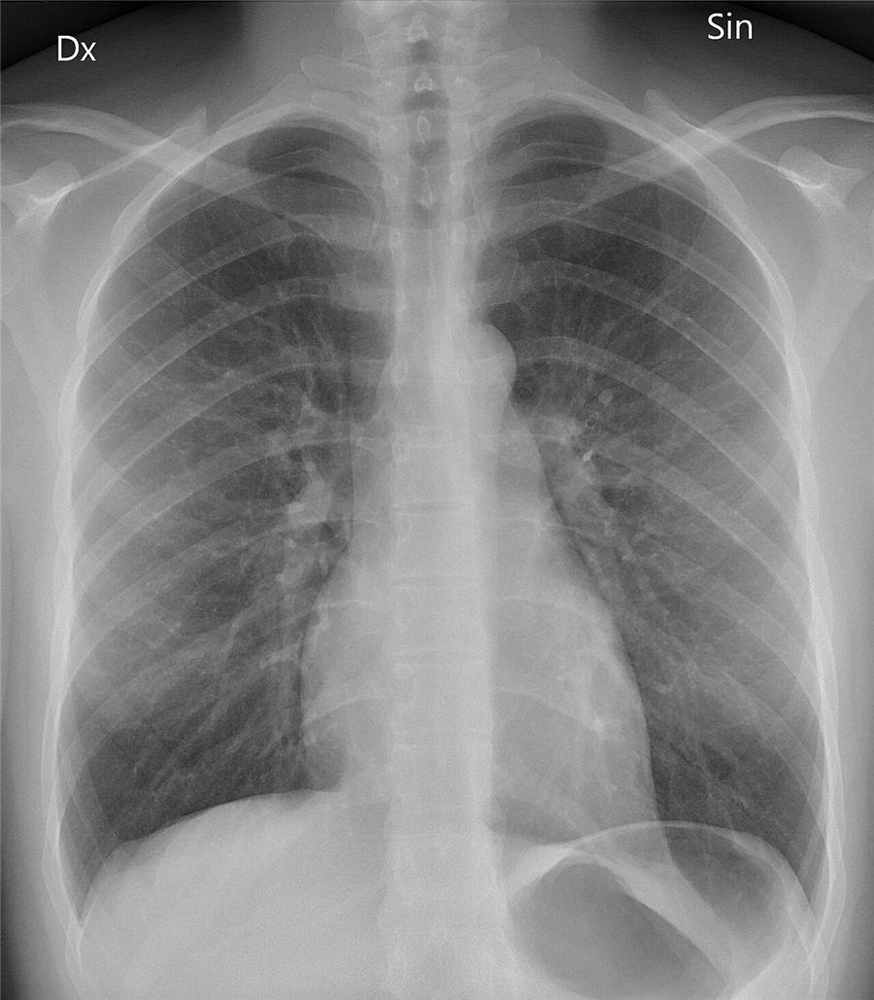
Push or pull?
_chest_radiograph_(X-ray).jpg){kind=link}
When you breathe in, what makes the air go into your lungs?
Choose an answer, and decide why, before you open the answer.
Show the answer
B. Muscles enlarge the chest, the pressure inside falls, and air flows in.
When you breathe in, the diaphragm contracts and flattens, and the external intercostal muscles move the ribs up and out. The chest cavity gets bigger, so the pressure of the air in the lungs falls below the pressure of the air outside. Air flows in until the two pressures are equal.
At rest, breathing out is mostly passive: the muscles relax, the stretched elastic lungs recoil, the volume falls and the pressure rises above the outside pressure, so air flows out. When you breathe out hard, the internal intercostal and abdominal muscles help.
Clearing up misconceptions
The lungs have no muscles that expand them. They follow the chest wall, because the pleural membranes hold them against it. Air always moves from higher to lower pressure. The lungs do not suck it in, and the air outside does not force its way in.
Can you empty your lungs?

You breathe out as hard as you possibly can. How much air is left in your lungs?
Choose an answer, and decide why, before you open the answer.
Show the answer
B. About 1 to 1.5 litres in an adult. This is the residual volume.
The ribs and the pleural membranes keep the lungs stretched, so they cannot collapse completely. The air that is always left is the residual volume, about 1 to 1.5 litres in an adult, out of a total of about 6 litres. It keeps the alveoli open, and it means each breath only partly refreshes the air in the lungs, which keeps oxygen and carbon dioxide levels steady between breaths.
A spirometer measures only the air that moves in and out. It gives tidal volume, the inspiratory and expiratory reserve volumes and vital capacity, but not the residual volume, which has to be measured in other ways.
Clearing up misconceptions
Vital capacity is not "how much air your lungs hold". It is the most you can breathe out after the deepest possible breath in. Total lung capacity is vital capacity plus residual volume.
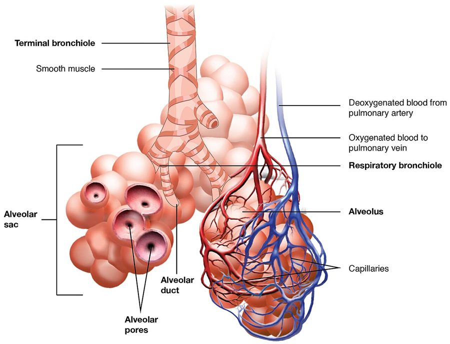
When the blood stops

In one part of a lung, blood stops flowing through the capillaries, but the person keeps breathing normally. What happens to oxygen uptake in that part?
Choose an answer, and decide why, before you open the answer.
Show the answer
B. It stops. Without blood flow, the concentration gradient disappears.
Diffusion needs a concentration gradient. Normally, flowing blood carries oxygen away as fast as it arrives, so the blood in the capillaries always has less oxygen than the air in the alveoli. If the blood stops, it fills up with oxygen within seconds and the gradient is gone. The net movement of oxygen stops, even though fresh air keeps arriving.
Gas exchange stays efficient because two flows keep the gradients steep. Ventilation brings in air with plenty of oxygen and removes carbon dioxide, and blood flow carries oxygen away and brings carbon dioxide. Something like this happens in a pulmonary embolism, when a clot blocks the blood supply to part of a lung.
Clearing up misconceptions
C sounds sensible, because slow blood in capillaries does help exchange. Slow helps, but stopped does not: nothing replaces the loaded blood, so there is no gradient left to drive diffusion.
B3.2 Transport (Animal)
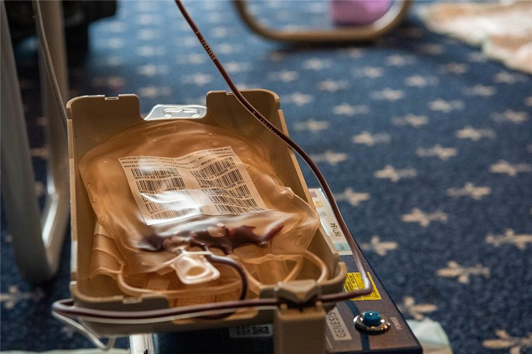
Is the blood in your veins blue?
.jpg){kind=link}
Your veins look blue through your skin. What colour is the blood inside them?
Choose an answer, and decide why, before you open the answer.
Show the answer
B. Dark red. Blood is never blue.
Haemoglobin is bright red when it carries oxygen and darker red when it does not. Blood taken from a vein, for example into a blood donation bag, is dark red, and that blood has never touched the air.
Veins look blue because of how light travels through skin. Red light goes deeper into the skin and much of it is absorbed by the blood in a vein, while more blue light is scattered back from the skin above it. The vein sends back less red light than the skin around it, so we see it as bluish.
Clearing up misconceptions
Diagrams colour deoxygenated blood blue to make circulation easier to follow. This is a colour code, not the real colour.
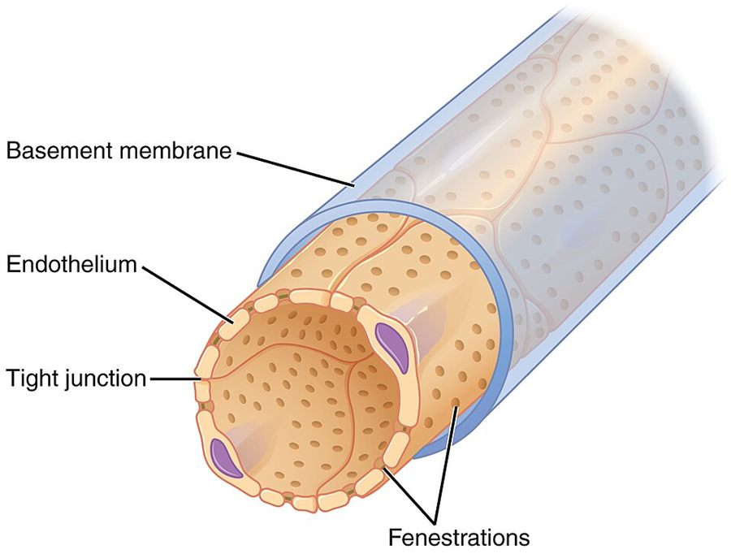
The slow lane

Each capillary is much narrower than the aorta. Where does blood flow most slowly?
Choose an answer, and decide why, before you open the answer.
Show the answer
B. In the capillaries, at less than a millimetre per second.
Every second, the same volume of blood that passes through the aorta must also pass through all the capillaries together. The aorta is one vessel about 2.5 cm across, but there are billions of capillaries, and side by side their total cross-sectional area is hundreds of times larger. Spread across that area, the blood moves much more slowly: less than a millimetre per second, compared with tens of centimetres per second in the aorta.
The slow flow gives time for exchange. Oxygen and glucose diffuse out, and carbon dioxide and other wastes diffuse in, while red blood cells squeeze through one at a time.
Clearing up misconceptions
A comes from thinking about one hose with a nozzle, where narrowing makes water go faster. That is true for a single pipe, but a capillary bed is a huge number of pipes side by side. What matters is the total area the blood flows through.
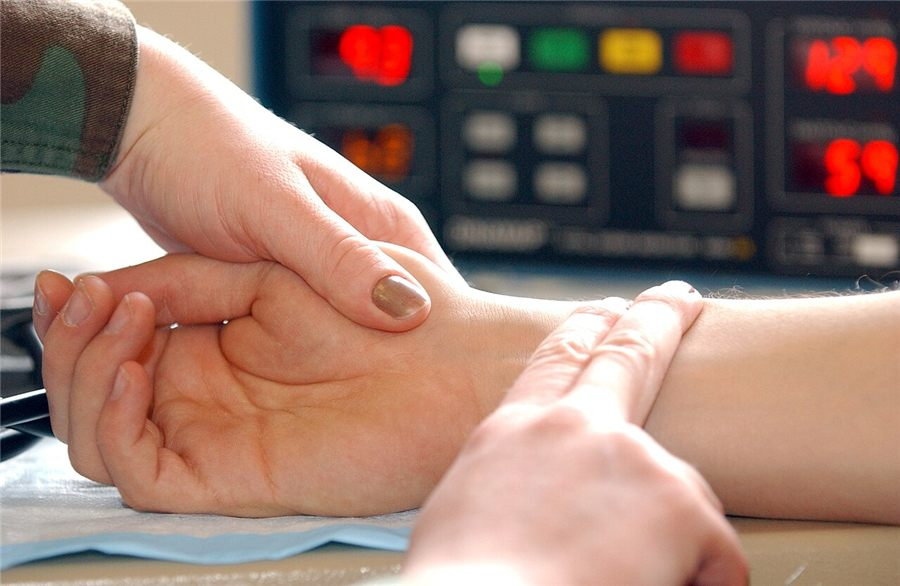
What is a pulse?

You feel a pulse in your wrist. What are you feeling?
Choose an answer, and decide why, before you open the answer.
Show the answer
B. A pressure wave in the artery wall, which travels much faster than the blood.
Each time the left ventricle contracts, it pushes blood into an aorta that is already full. The elastic artery wall stretches and then recoils, and this stretch passes along the arteries as a wave. The wave travels at several metres per second, much faster than the blood itself moves, so it reaches your wrist a fraction of a second after each beat.
You can feel a pulse in arteries but not in veins, because by the time blood has passed through the capillaries its pressure is low and steady. The recoil of the elastic arteries also keeps blood moving between beats.
Clearing up misconceptions
A is wrong because the blood pushed out by one beat takes several seconds to reach your wrist; the wave arrives much sooner. C is wrong because arteries do not pump. Their muscle changes their width, which controls how much blood flows to each organ.
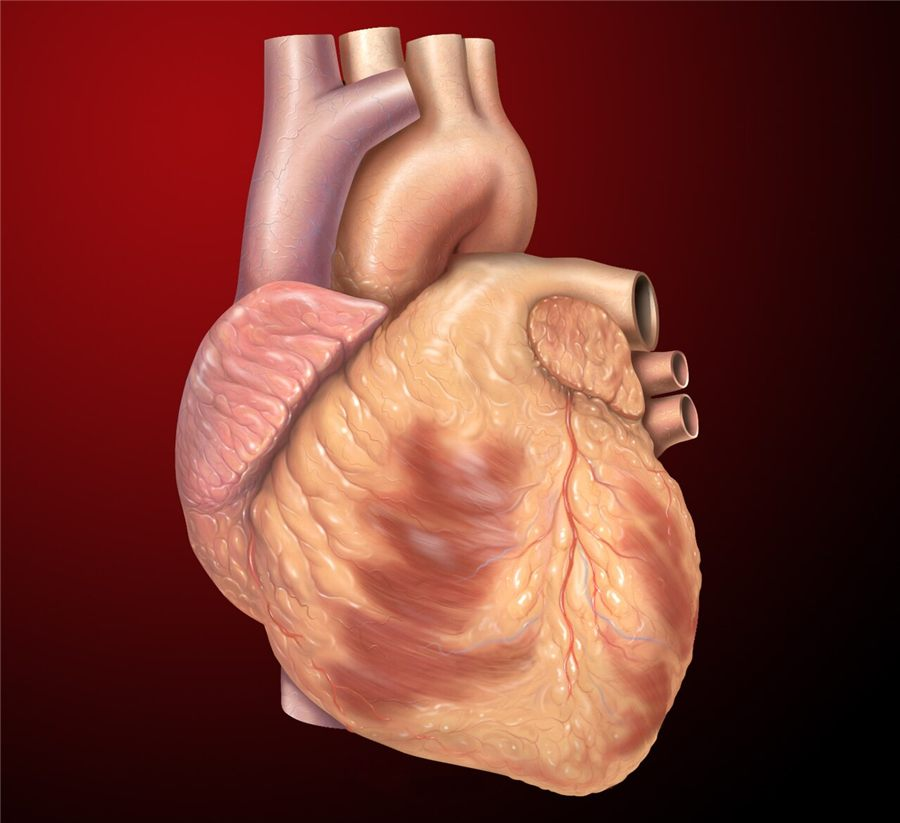
Why does the heart need its own arteries?

The chambers of the heart are always full of blood. Why does the heart muscle need its own coronary arteries?
Choose an answer, and decide why, before you open the answer.
Show the answer
B. The wall is too thick for diffusion from the chambers, so it needs its own capillaries.
The wall of the left ventricle is about a centimetre thick, and it works without a break. Oxygen diffuses only a fraction of a millimetre into the wall from the blood in a chamber. So the heart muscle is supplied like any other tissue: coronary arteries branch off the aorta, run over the surface of the heart and feed capillaries all through the muscle.
If a coronary artery is narrowed by fatty plaque and then blocked by a clot, the muscle beyond the blockage is starved of oxygen and starts to die. This is a heart attack.
Clearing up misconceptions
C is half right: the right side of the heart holds deoxygenated blood. But the left side holds oxygen-rich blood, and its muscle still needs coronary arteries. The problem is distance, not the type of blood.
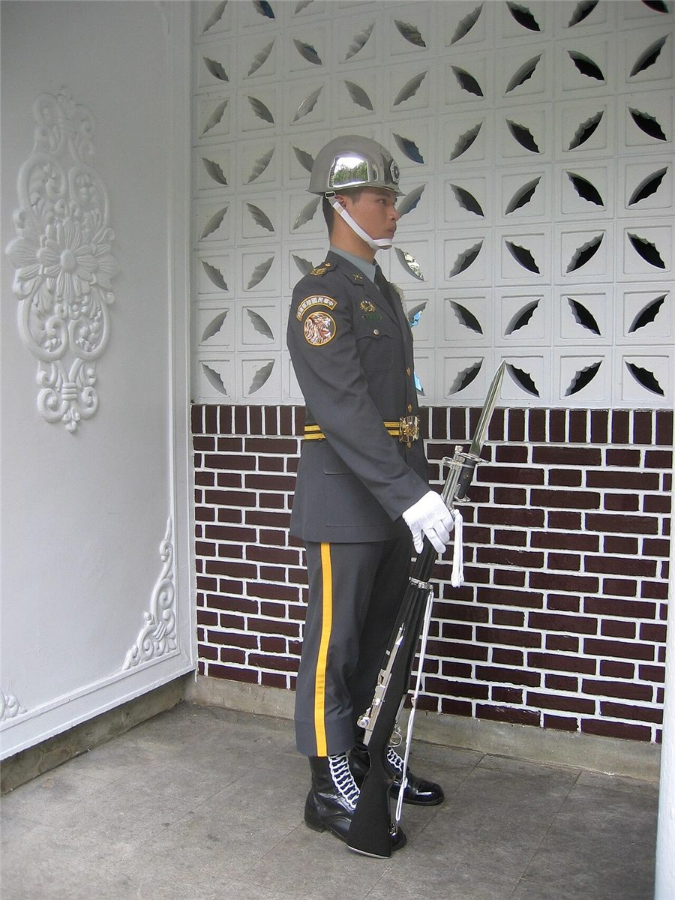
Fainting on parade

A soldier stands completely still on parade for an hour on a warm day, then faints. Which explanation fits best?
Choose an answer, and decide why, before you open the answer.
Show the answer
B. Blood pooled in the leg veins, so less returned to the heart and the brain got too little.
Veins carry blood at low pressure, and from the legs it has to travel upwards against gravity. Little of the pressure from the heart's beat is left after the capillaries, so veins rely on help. Each time the leg muscles contract they squeeze the veins and push blood towards the heart, while valves stop it flowing back.
Standing still stops this muscle pump. Blood collects in the leg veins, less returns to the heart, the heart pumps out less with each beat and blood flow to the brain falls. Warm weather makes it worse, because the vessels in the skin widen. Fainting puts the head level with the heart, and blood flow to the brain recovers. Soldiers are taught to wiggle their toes and tense their calf muscles.
Clearing up misconceptions
Valves do not push blood along. They only stop it flowing backwards, so they need the squeeze from muscles to work.
C2.2 Neural signalling
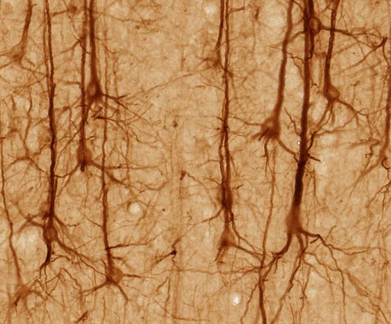
Gentle touch, firm press

A sensory neuron in your fingertip responds to a gentle touch and then to a firm press. What is different about the nerve impulses for the firm press?
Choose an answer, and decide why, before you open the answer.
Show the answer
B. Same size, more often. Strength is coded by how often impulses arrive.
An action potential happens fully or not at all. Once the membrane passes a threshold, the action potential always rises to the same peak, about +30 to +40 mV, whatever the stimulus. So a neuron cannot signal "stronger" by sending a bigger impulse.
A stronger stimulus makes each neuron fire more often, with shorter gaps between impulses, and it also sets off more neurons nearby. The brain reads the strength of a stimulus from how often impulses arrive and how many neurons are firing.
Clearing up misconceptions
A is the natural guess, like turning up the volume. C is also wrong: how fast an impulse travels depends on the axon, its width and whether it has a myelin sheath, not on the stimulus.
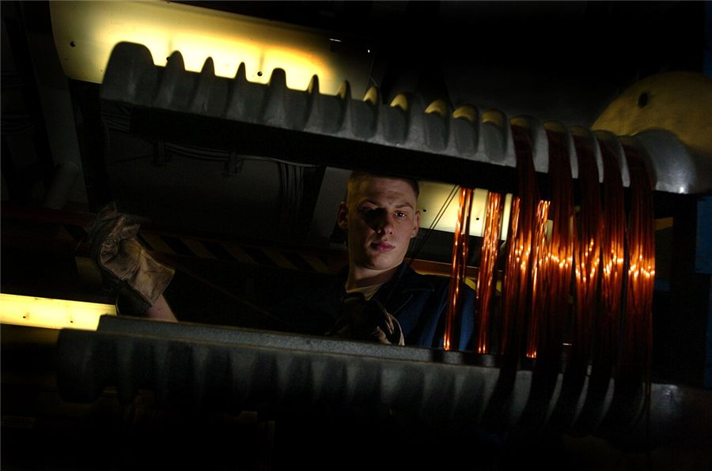
Like electricity in a wire?

Is a nerve impulse an electric current flowing along the axon, like electricity in a copper wire?
Choose an answer, and decide why, before you open the answer.
Show the answer
B. No. It is a wave of ions crossing the membrane, rebuilt as it goes.
In an action potential, sodium ions flow into the axon through channels, and then potassium ions flow out. This reverses and then restores the voltage across the membrane. The change at one point triggers the same change in the next stretch of membrane, so the impulse is rebuilt as it travels, and it is still full size at the end of an axon a metre long.
This is why impulses are much slower than electricity in a wire: from about 1 m/s in thin fibres without myelin to over 100 m/s in thick myelinated ones. That is fast, but the delay can be measured, as Hermann von Helmholtz first did in 1850.
Clearing up misconceptions
It is right to call nerve impulses electrical, but the charge is carried by ions, Na+ and K+, crossing the membrane, not by electrons flowing along it. C mixes up the axon with the synapse, which is where chemicals carry the signal.
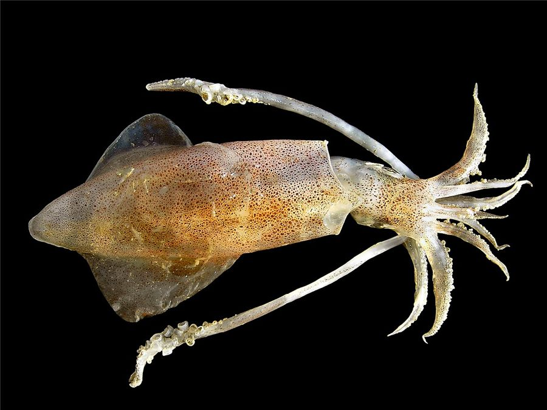
The squid and the thin human axon

A squid's giant axon is about half a millimetre wide, and its impulses travel at about 25 m/s. Many human motor axons are about fifty times thinner, yet their impulses travel even faster. How?
Choose an answer, and decide why, before you open the answer.
Show the answer
B. Myelin. It lets a thin axon carry impulses faster than a very wide one without it.
Two things make an impulse travel faster: a wider axon and a myelin sheath. Squid axons have no myelin, so the only way to evolve a fast escape response was a very wide axon. Many vertebrate axons are myelinated. The impulse only has to be produced at the small gaps in the sheath, about a millimetre apart, and it jumps from gap to gap. Thin myelinated axons can reach about 120 m/s.
Myelin saves space and energy. One human nerve can pack thousands of fast, thin fibres into the width of a single squid giant axon.
Clearing up misconceptions
Temperature does affect speed, so C has some truth in it, but nowhere near enough to explain a difference this large. A is wrong: impulses work in the same way in squid and in humans. That is why squid axons were so useful to the scientists who first worked out how impulses happen.
 Is a resting neuron resting?
Is a resting neuron resting?

A neuron that is not sending impulses is said to be "at rest". Is it using energy?
Choose an answer, and decide why, before you open the answer.
Show the answer
B. Yes, a lot. The pumps never stop.
The resting potential, about −70 mV, depends on gradients: more sodium ions outside the axon and more potassium ions inside. Ions leak slowly across the membrane all the time, so sodium-potassium pumps must keep working. Each cycle of a pump uses one ATP to move three Na+ out and two K+ in.
This is expensive. The brain is about 2% of your body mass but uses about 20% of your energy at rest, and much of that goes on pumping ions. Without oxygen, ATP runs out, the gradients fade, and neurons stop working within minutes.
Clearing up misconceptions
"At rest" means not firing, not inactive. C is part of the story: pumping does increase after impulses, but it never stops.
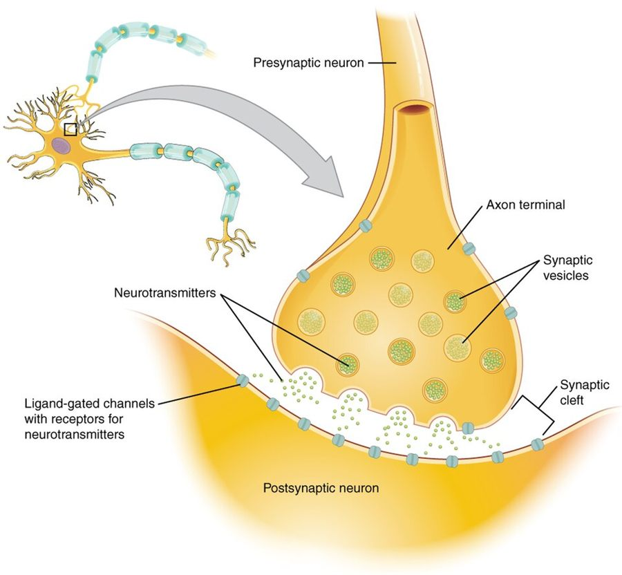
Across the gap

An impulse reaches the end of a neuron, where there is a tiny gap before the next neuron. How does the signal cross the gap?
Choose an answer, and decide why, before you open the answer.
Show the answer
B. As a chemical: neurotransmitter diffuses across and binds to receptors.
When the impulse arrives, calcium ions enter the end of the neuron, and vesicles release neurotransmitter by exocytosis. It diffuses across the synaptic cleft, which is about 20 nanometres wide, and binds to receptors on the next neuron's membrane, where it opens ion channels.
Using a chemical makes the synapse one-way, because only one side releases neurotransmitter and only the other side has receptors. It also allows control: many drugs and toxins work by acting at synapses.
Clearing up misconceptions
A: most synapses in the human nervous system are chemical, although a few electrical synapses do exist where two cells are joined directly. C mixes up the axon and the synapse. Neurotransmitter is stored in vesicles at the end of the axon, and the signal along the axon is electrical.
C3.1 Integration of body systems
Holding your breath
.jpg){kind=link}
You hold your breath until you cannot bear it any longer. What mainly causes the overwhelming urge to breathe?
Choose an answer, and decide why, before you open the answer.
Show the answer
B. Rising carbon dioxide, which makes the blood more acidic.
Chemoreceptors in the brainstem and in the walls of the aorta and carotid arteries detect the fall in pH caused by rising carbon dioxide. They send impulses to the breathing centre in the medulla, which makes you breathe faster and deeper. In a healthy person, rising carbon dioxide is a much stronger signal than falling oxygen.
This is why breathing fast and deep before swimming underwater is dangerous. It lowers carbon dioxide, so the urge to breathe comes much later, but oxygen keeps falling, and the swimmer can black out without warning.
Clearing up misconceptions
A feels right, because we breathe to get oxygen. The chemoreceptors do respond to low oxygen, but only when it falls a long way, for example at high altitude. Everyday control of breathing runs mostly on carbon dioxide.
Hand on a hot pan

You touch a hot pan and pull your hand away. Which happens first?
Choose an answer, and decide why, before you open the answer.
Show the answer
B. The movement comes first. The spinal cord handles it before the brain feels the pain.
This is a reflex. Impulses from pain receptors travel along a sensory neuron to the spinal cord. There they pass through a relay neuron straight to a motor neuron, which makes the muscles of your arm contract. Only a few synapses are involved, so the response is very fast.
At the same time, other neurons carry the signal up the spinal cord to the brain. Feeling pain needs the cerebral hemispheres, and the longer route means the signal gets there later. You often notice the pain just after your hand has already moved.
Clearing up misconceptions
Many people think every movement is ordered by the brain. Reflexes are coordinated by the spinal cord without conscious thought, although the brain is told and can sometimes override them, for example when you keep hold of a hot plate so as not to drop it.
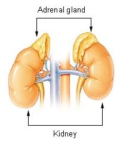
Still shaking after the near miss

A car nearly hits you while you are cycling. The danger is over in a second, but your heart pounds and your hands shake for several minutes. Why does the effect last so long?
Choose an answer, and decide why, before you open the answer.
Show the answer
B. A hormone, epinephrine, is still in your blood.
Your nervous system acted first: within a split second, impulses made you brake and steer. The adrenal glands were also stimulated to secrete epinephrine into the blood. It raises heart rate and breathing rate, widens the airways and releases glucose from the liver.
Hormones travel in the blood and act on every tissue that has receptors for them, so their effects are widespread. They are slower to start than nerve impulses and last longer, until the hormone is broken down, which takes minutes. Nerve signals stop quickly, because neurotransmitter is removed from synapses within milliseconds.
Clearing up misconceptions
The shaking is not a sign that something is wrong. It is what epinephrine is for: getting the body ready for sudden effort, which it keeps doing for a while after the danger has passed.
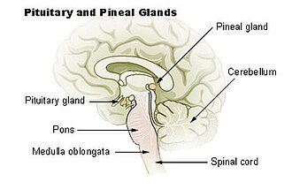
A bright screen at midnight

Looking at a bright screen late at night can make it harder to fall asleep. Which explanation does the evidence support?
Choose an answer, and decide why, before you open the answer.
Show the answer
B. Evening light holds back melatonin, the hormone that tells the body it is night.
Melatonin is secreted by the pineal gland mainly in the dark, and it helps set the timing of sleep within the body's daily rhythm. Light-sensitive cells in the retina, which respond most to blue light, send signals to a cluster of neurons in the hypothalamus that acts as the body's master clock. In darkness melatonin rises. Light in the evening holds it down and shifts the clock later.
A screen is much dimmer than daylight, so its effect is real but smaller than often claimed. Bright room lighting and what you are doing on the screen also matter.
Clearing up misconceptions
Melatonin is not the body's own sleeping pill. It signals "it is night" to the body's clocks. C is wrong: screens give off visible light, not harmful radiation.
Eating upside down

Astronauts can swallow food in orbit, and you can swallow while hanging upside down. What moves food along your gut?
Choose an answer, and decide why, before you open the answer.
Show the answer
B. Peristalsis: waves of muscle contraction, which work whichever way up you are.
The wall of the gut has layers of smooth muscle. Circular muscle behind the food contracts while the muscle just ahead relaxes, so a wave of squeezing pushes the food along, whatever way up you are.
Swallowing starts voluntarily, but after that peristalsis is coordinated mostly by the enteric nervous system, a network of hundreds of millions of neurons in the gut wall. The central nervous system can speed it up or slow it down, for example through the vagus nerve, but the gut can keep peristalsis going even when those connections are cut.
Clearing up misconceptions
C goes too far. The brain adjusts digestion but does not order each contraction. The enteric nervous system has so many neurons that it is sometimes called the "second brain".
D3.3 Homeostasis
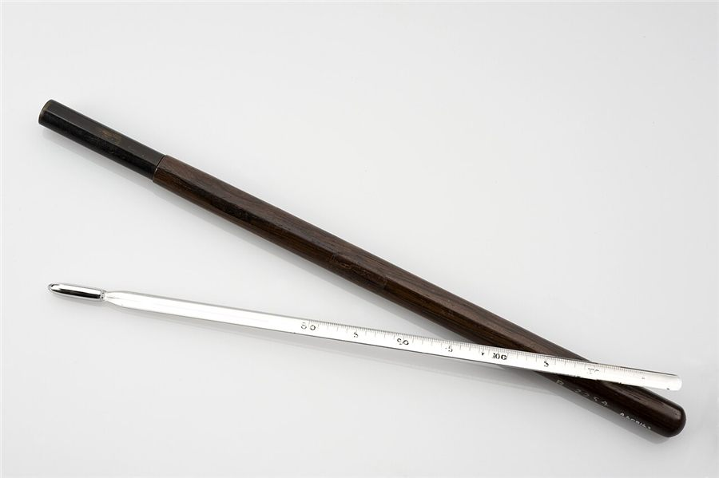
Shivering with a fever

At the start of a fever, you shiver and feel cold, even though your body temperature is rising. What is happening?
Choose an answer, and decide why, before you open the answer.
Show the answer
B. The target has moved up, and the body is heating itself to reach it.
Chemicals released during an infection act on the hypothalamus and raise the temperature it treats as normal, for example from about 37 °C to 39 °C. Your actual temperature is now below the set point, so the usual responses to cold switch on: shivering, narrowing of the arterioles that supply the skin, and feeling cold.
When the fever breaks, the set point falls back, and the body responds as if it were too hot: you sweat and feel warm. Negative feedback is working normally the whole time, just around a different target.
Clearing up misconceptions
Homeostasis does not mean a value that never changes. Set points can move. A rise in temperature does not by itself mean that control has failed.
Sweating on a sticky day

On a hot, humid day you sweat a lot but still feel too hot. On a hot, dry day you sweat and feel cooler. Why?
Choose an answer, and decide why, before you open the answer.
Show the answer
B. The cooling comes from evaporation, and humid air slows it down.
Turning liquid water into vapour takes a lot of energy. Evaporating sweat takes that energy as heat from your skin. Sweat that drips off without evaporating removes very little heat.
Evaporation depends on the difference between the water vapour at your skin and in the air. In humid air that difference is small, so sweat evaporates slowly and you lose much less heat. This is why hot, humid weather is dangerous, especially during exercise.
Clearing up misconceptions
"Sweating cools you down" is a good shortcut, but the sweat itself is at body temperature. The cooling comes from evaporation. On a sticky day, sweat mostly just makes you wet.
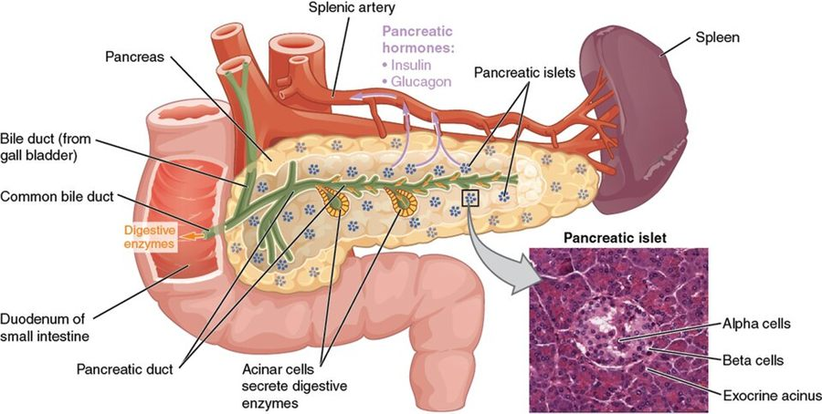
Where does the sugar go?

After a meal, your blood glucose rises and then falls back within a couple of hours, thanks to insulin. Where does the glucose go?
Choose an answer, and decide why, before you open the answer.
Show the answer
B. Into cells, where it is stored as glycogen or used in respiration.
Beta cells in the pancreas detect the rise and secrete insulin. Insulin binds to receptors on target cells and makes them take in glucose. Liver and muscle cells turn it into glycogen for storage, other cells use it in respiration, and any surplus can be turned into fat.
When blood glucose falls, alpha cells in the pancreas secrete glucagon, and the liver breaks glycogen down to release glucose again. The two hormones keep blood glucose within a narrow range by negative feedback.
Clearing up misconceptions
Insulin does not destroy glucose. It moves it out of the blood and into cells. C describes untreated diabetes: when blood glucose is very high, the kidneys cannot take it all back, and glucose appears in the urine. In a healthy person, urine contains almost no glucose.
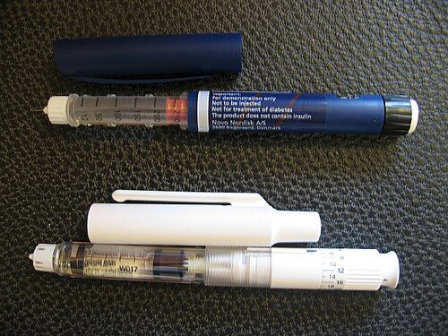
Is diabetes about eating sugar?

Which statement about type 1 and type 2 diabetes is correct?
Choose an answer, and decide why, before you open the answer.
Show the answer
B. They have different causes: type 1 is autoimmune, and type 2 is mainly insulin resistance.
In type 1 diabetes, the body's own immune system destroys the beta cells of the pancreas, so little or no insulin is made. Diet does not cause it. It often starts in childhood or as a young adult, and it is treated with insulin.
In type 2 diabetes, insulin is still made, at least at first, but target cells respond to it less. The risk is raised by being overweight, by too little exercise and by family history. It can often be managed with diet, exercise and medicines, although some people also need insulin.
Clearing up misconceptions
A sugary diet can lead to weight gain and so raise the risk of type 2, but no single food "causes" diabetes. C is wrong both ways: type 1 can start at any age, and type 2 is more and more common in young people.
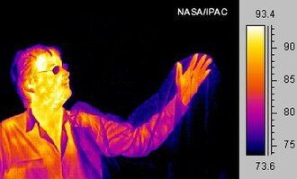
Cold, pale fingers

On a freezing day your fingers turn pale and cold. What has happened to the blood vessels in your skin?
Choose an answer, and decide why, before you open the answer.
Show the answer
B. The arterioles leading to the skin have narrowed: vasoconstriction.
When your temperature starts to fall, the hypothalamus sends impulses to the smooth muscle in the walls of the arterioles that lead to the skin capillaries. The muscle contracts, the arterioles narrow, and less warm blood reaches the surface, so less heat is lost to the air. The skin looks pale and feels cold, but your core stays warm.
In hot conditions the opposite happens. The arterioles widen (vasodilation), more blood flows near the surface, and the skin looks flushed.
Clearing up misconceptions
Blood vessels do not move up or down in the skin. And it is not the capillaries that narrow, because their walls have no muscle. It is the arterioles that supply them.
C3.2 Defence against disease
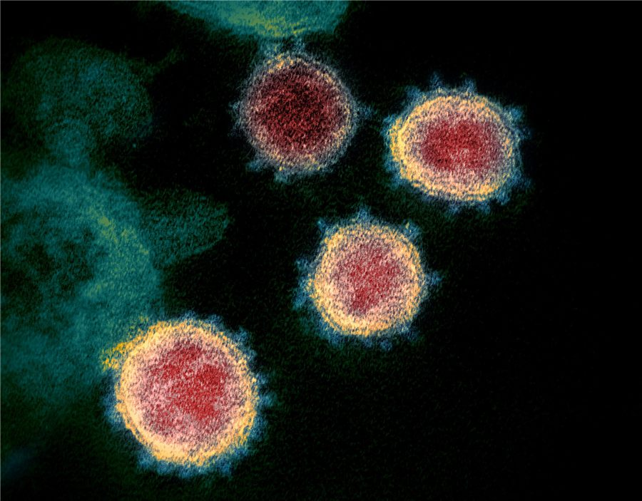
Antibiotics for a cold?

You have a bad cold, which is caused by a virus. Will antibiotics help you get better?
Choose an answer, and decide why, before you open the answer.
Show the answer
B. No. A virus has nothing for an antibiotic to act on.
Antibiotics work by blocking processes that bacteria carry out and our cells do not, such as building a bacterial cell wall or using bacterial ribosomes. Viruses have no cell wall and no ribosomes of their own: they use the host cell's machinery to reproduce. There is nothing in a virus for an antibiotic to block.
A doctor may prescribe an antibiotic during a viral illness if a bacterial infection develops as well. Taking antibiotics when they cannot help gives no benefit, can cause side effects, and helps select resistant bacteria in your body.
Clearing up misconceptions
"Germs" lumps together very different things. Bacteria are living cells, and viruses are not cells. There are antiviral drugs for a few viruses, such as HIV and influenza, but they work in a different way.
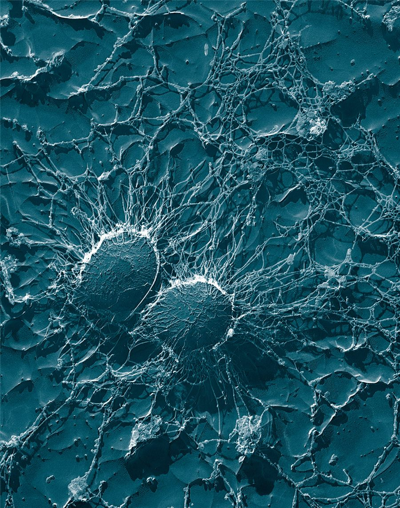
Did the bacteria get used to it?

A patient's infection stops responding to an antibiotic. Which explanation is correct?
Choose an answer, and decide why, before you open the answer.
Show the answer
B. Natural selection: resistant bacteria were already there, and the antibiotic removed their competitors.
In a large population of bacteria, a few may already carry a gene for resistance, from a random mutation or picked up from another bacterium on a plasmid. The antibiotic kills the susceptible bacteria, so the resistant ones survive and reproduce, and soon most of the population is resistant. This is natural selection, happening in days.
Resistance genes can also pass between bacteria, even between species, on plasmids. Bacteria that collect several resistance genes become resistant to many antibiotics, like MRSA.
Clearing up misconceptions
It is the bacteria that become resistant, not the patient. And the bacteria did not "learn" or "try". The antibiotic did not cause the mutations; it selected the bacteria that already had them. Experiments in the 1940s and 1950s showed that resistance mutations arise before the bacteria meet the drug.
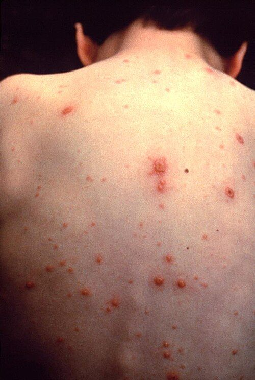
Why only once?

Most people catch chickenpox only once. Why?
Choose an answer, and decide why, before you open the answer.
Show the answer
B. Memory cells, not antibodies, give the lasting protection.
During the first infection, B-cells that recognise the virus's antigens are activated and multiply to form plasma cells, which secrete antibodies. Some become long-lived memory cells instead. Antibody levels fall in the weeks after you recover, but the memory cells remain for decades.
When the virus enters again, the memory cells respond within days, making more antibody, faster, than the first time. The virus is destroyed before it can make you ill. Vaccines work by producing these memory cells without the illness.
Clearing up misconceptions
A is a common mistake: antibody levels do not stay high, and the lasting protection comes from memory cells. C has a twist: the chickenpox virus actually stays hidden in nerve cells for life and can come back decades later as shingles. Memory cells stop it causing chickenpox again, but they do not always stop shingles.
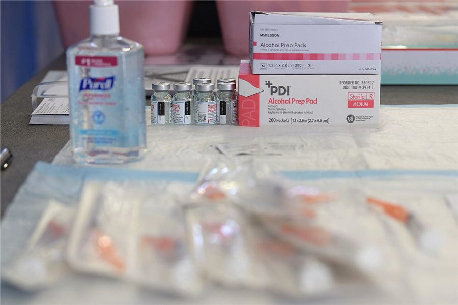
Most of the cases were vaccinated

There is an outbreak in a town where 95% of people are vaccinated. A report says that most of the people who caught the disease were vaccinated. What does this tell you?
Choose an answer, and decide why, before you open the answer.
Show the answer
B. Not much on its own. Compare the rate in each group, not the number of cases.
Picture 1000 people: 950 vaccinated and 50 not. Suppose half of the unvaccinated people catch the disease: that is 25 cases. Suppose the vaccine cuts each person's risk by 90%, so 5% of vaccinated people catch it: about 48 cases. Most cases (48 out of 73) are in vaccinated people, even though each vaccinated person was ten times less likely to catch it.
To judge a vaccine, compare the rate of disease in each group, for example cases per 1000 people. These numbers are invented to show the effect, but the same pattern appeared in real COVID-19 data in places with high vaccination rates.
Clearing up misconceptions
This mistake is called the base rate fallacy: ignoring how big each group is. The more people are vaccinated, the larger the share of the remaining cases that will be in vaccinated people, even with a very effective vaccine.
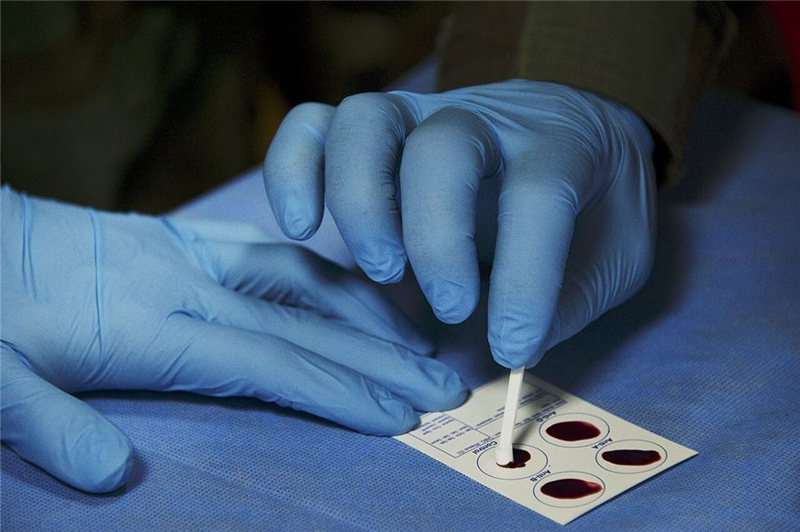
The wrong blood group

A patient with blood group A is given group B red blood cells by mistake. What causes the dangerous reaction?
Choose an answer, and decide why, before you open the answer.
Show the answer
B. The patient's own antibodies attack the donated cells.
Red blood cells carry antigens on their surface: group A cells carry A antigens and group B cells carry B antigens. Your plasma contains antibodies against the antigen you do not have, so a person with group A blood has anti-B antibodies, from early in life.
When group B cells enter, the anti-B antibodies bind to them and make them stick together. The clumps can block small vessels and the cells can burst, which can be fatal. Group O cells carry neither antigen, which is why group O blood is given in emergencies when there is no time to test.
Clearing up misconceptions
A has a grain of truth, since donated plasma also contains antibodies. But most transfusions are of red cells with most of the plasma removed, and any antibodies left are diluted. The main danger is the patient's own antibodies. C is wrong: red blood cells have no immune role and cannot attack anything.
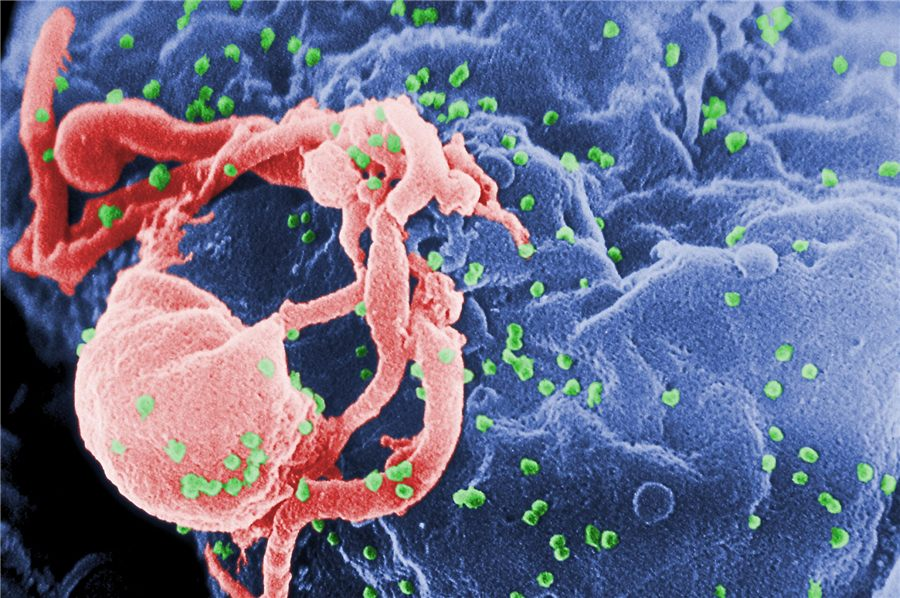
What actually harms a person with AIDS?

People with untreated AIDS often die of pneumonia, tuberculosis or rare cancers, not of HIV itself. Why?
Choose an answer, and decide why, before you open the answer.
Show the answer
B. HIV removes the helper T-cells that the immune system needs, so other infections take hold.
HIV infects helper T-cells, which carry the receptor it binds to. Over several years, the number of helper T-cells falls. Without them, B-cells are not activated to make antibodies, and the adaptive immune system fails. This stage is AIDS.
Pathogens that a healthy immune system would control easily then cause serious disease. Today, antiretroviral drugs stop HIV from replicating, keep helper T-cell numbers up and give people with HIV a near-normal life expectancy.
Clearing up misconceptions
HIV and AIDS are not the same thing. HIV is the virus. AIDS is the condition that develops when the immune system has failed. With early treatment, most people with HIV never develop AIDS.
D3.1 Reproduction (Human)
 Doubling every generation?
Doubling every generation?

Human body cells have 46 chromosomes. If each parent passed on all 46 of theirs, how many would the child have?
Choose an answer, and decide why, before you open the answer.
Show the answer
B. 92. Meiosis halves the number, so fertilisation can restore it.
Meiosis makes gametes with one chromosome from each of the 23 pairs, so they are haploid (n = 23). When a sperm fertilises an egg, the zygote is diploid again (2n = 46). Halving and then fusing keeps the number the same, generation after generation.
Meiosis also shuffles: each gamete gets a different mix of the chromosomes that came from that parent's mother and father. So brothers and sisters, apart from identical twins, are genetically different.
Clearing up misconceptions
Cells do not "get rid of" extra chromosomes. Even one extra chromosome usually causes problems: for example, three copies of chromosome 21 cause Down syndrome.
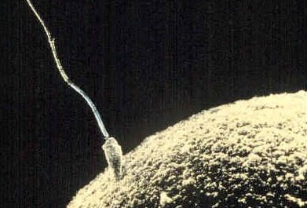
Whose gamete decides?

In humans, whose gamete decides whether a baby is genetically male or female?
Choose an answer, and decide why, before you open the answer.
Show the answer
B. The sperm. Every egg carries an X; a sperm carries an X or a Y.
Females have two X chromosomes, so every egg carries an X. Males have one X and one Y, so meiosis gives sperm that carry either an X or a Y, in roughly equal numbers. An egg fertilised by a sperm carrying X gives XX; by a sperm carrying Y, XY. A gene on the Y chromosome starts the development of testes.
For centuries, women were blamed for not having sons. Genetics shows that the egg plays no part in this choice.
Clearing up misconceptions
C is true for some reptiles: in many turtles and crocodiles, the temperature at which the eggs develop decides the sex. In mammals, it is the chromosomes.
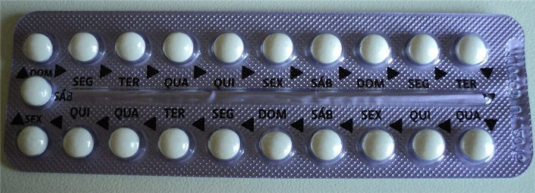
How the pill works

The combined contraceptive pill contains synthetic estrogen and progesterone. How does it prevent pregnancy?
Choose an answer, and decide why, before you open the answer.
Show the answer
B. By negative feedback: high hormone levels hold back FSH and LH, so there is no ovulation.
In a normal cycle, FSH from the pituitary gland makes a follicle develop, and a surge of LH triggers ovulation. High levels of estrogen and progesterone normally hold back FSH and LH. This is negative feedback, which also happens after ovulation and during pregnancy.
The pill keeps these hormone levels high, so the pituitary stays held back: no follicle matures and there is no LH surge. The pill also thickens the mucus in the cervix, which makes it harder for sperm to get into the uterus.
Clearing up misconceptions
The pill does not destroy eggs. They simply stay in their follicles. Killing sperm is what spermicides do, which is a different method of contraception.
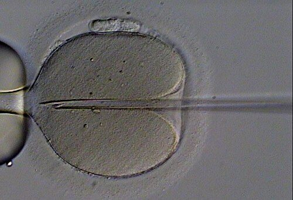
Why switch the cycle off first?

IVF treatment often begins with a drug that stops the woman's own pituitary hormones, before she is given FSH injections. Why switch off her own cycle first?
Choose an answer, and decide why, before you open the answer.
Show the answer
B. So that the doctors, not her own cycle, decide when the eggs mature.
In a natural cycle, usually only one follicle matures, and an LH surge releases the egg at a time the body decides. In IVF, the team needs several mature eggs, collected just before they would be released. So first a drug stops her own secretion of FSH and LH.
Next, high doses of FSH make many follicles develop at once. When they are ready, an injection of hCG, which acts like LH, makes the eggs finish maturing, and they are collected about 36 hours later, before they can be released.
Clearing up misconceptions
The aim is not to rest the ovaries. IVF hormones are used to produce more eggs than a natural cycle, at a time that suits the collection. C is wrong: a thick, healthy lining is needed for implantation.
Unit 2 Plant Systems
B3.1 Gas exchange (Plant)
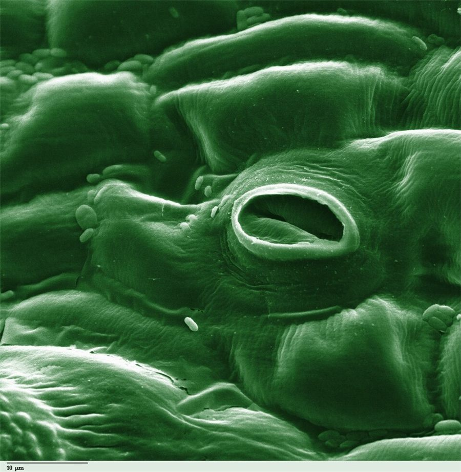
Why do leaves lose so much water?

A plant loses most of the water its roots take up by evaporation from its leaves. Why has the plant not evolved to stop this?
Choose an answer, and decide why, before you open the answer.
Show the answer
B. It is an unavoidable cost of letting carbon dioxide in.
Carbon dioxide can only reach the photosynthesising cells if the stomata are open. The air spaces inside the leaf are saturated with water vapour, while the air outside is usually drier, so whenever the stomata open, water vapour diffuses out. Well over 90% of the water a plant takes up is lost this way.
Plants control the loss by opening and closing their stomata, for example closing them when water is short. But closing them also stops carbon dioxide getting in, so photosynthesis slows down.
Clearing up misconceptions
A has some truth, because evaporation does cool leaves, but it is a side effect, not the reason the pores are open. C is wrong: only a tiny fraction of the water taken up is used in photosynthesis.
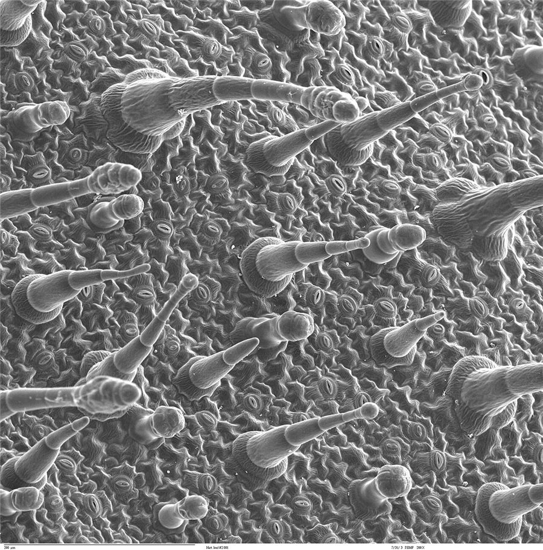
Why are stomata on the underside?

In many broad leaves, most stomata are on the lower surface. What is the best explanation?
Choose an answer, and decide why, before you open the answer.
Show the answer
A. The lower surface is cooler and shaded, so less water is lost.
The upper surface faces the sun and gets hotter, and it is more exposed to drying wind. Stomata on the lower surface still let carbon dioxide in, but lose less water vapour. The upper epidermis also has a waxy cuticle that reduces water loss.
Water lilies show the rule from the other side: their leaves float, so their stomata are on the upper surface, the only side in contact with air.
Clearing up misconceptions
C is wrong: epidermis cells have few or no chloroplasts, except for the guard cells. Most chloroplasts are in the palisade mesophyll below the upper epidermis.
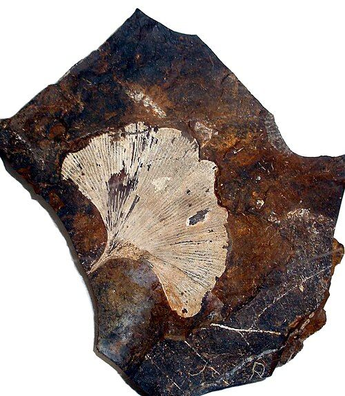
Fossil leaves with fewer stomata

Fossil leaves from times when the air held much more carbon dioxide than today have fewer stomata per square millimetre. Why might this be?
Choose an answer, and decide why, before you open the answer.
Show the answer
B. Fewer stomata were enough to let carbon dioxide in, and they saved water.
Each stoma lets carbon dioxide in but also lets water vapour out. When there is more carbon dioxide in the air, a leaf can take in enough through fewer stomata, so plants with lower stomatal density lose less water and do better.
Experiments today show the same response: many plants grown in air with extra carbon dioxide develop leaves with fewer stomata. Scientists use the stomatal density of fossil leaves to estimate past carbon dioxide levels.
Clearing up misconceptions
The fossils are not damaged; the pattern is consistent across many species and sites. Stomatal density is measured by counting stomata in a known area, for example from a nail-varnish peel or a micrograph.
Why is a leaf full of air?

The spongy mesophyll inside a leaf is full of air spaces. What is their main job?
Choose an answer, and decide why, before you open the answer.
Show the answer
B. A huge internal surface for gas exchange.
Carbon dioxide enters through the stomata into the air spaces, then dissolves in the film of water on the mesophyll cells and diffuses in. The air spaces give a very large surface area, and gases diffuse much faster through air than through cells.
The palisade cells above are packed with chloroplasts and get most light. The spongy layer below links them with the stomata, so carbon dioxide reaches them quickly and oxygen leaves.
Clearing up misconceptions
Leaves do not need to float. And the air spaces do not store water: the moist cell surfaces lose water vapour into them, which then diffuses out of the stomata.
B3.2 Transport (Plant)
How does water get to the top of a tree?

A coast redwood can be over 100 m tall, with no pump of any kind. What moves water up to its highest leaves?
Choose an answer, and decide why, before you open the answer.
Show the answer
B. Evaporation from the leaves pulls the water up.
Water evaporates from the mesophyll cells in the leaves and diffuses out through the stomata. This puts the water in the xylem under tension: it is pulled. Because water molecules stick to each other by hydrogen bonds (cohesion), the pull is passed down a continuous column all the way to the roots.
Water also clings to the xylem walls (adhesion), which helps hold the column in place. The energy comes from the sun, which drives the evaporation, not from the plant's ATP.
Clearing up misconceptions
A is a common answer, but root pressure is far too weak to push water up a tall tree. C is wrong because mature xylem vessels are dead, empty tubes, with nothing inside to do active transport.
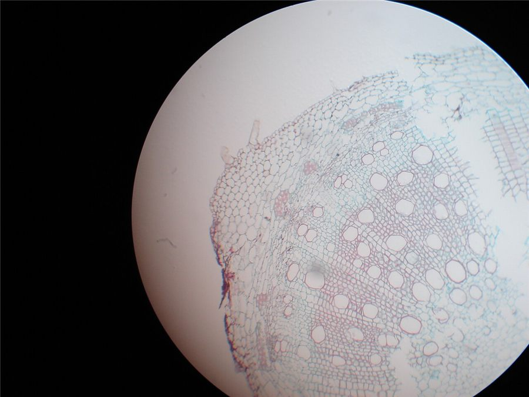
Dead pipes

Mature xylem vessels are dead: they have no cytoplasm, no nucleus and no end walls. How does this help them carry water?
Choose an answer, and decide why, before you open the answer.
Show the answer
B. Hollow tubes, strengthened with lignin, carry water with nothing in the way.
When xylem cells mature, they die and their contents and end walls break down, leaving long hollow tubes. Water can flow along them freely, pulled by transpiration.
The water inside is under tension, which tends to pull the walls inwards. Rings and spirals of lignin make the walls strong enough not to collapse, while pits let water move sideways between vessels.
Clearing up misconceptions
A mixes up living and working. Xylem works like a set of pipes; it does not need to be alive, because the pull comes from evaporation in the leaves.
Cutting flowers under water

Florists often recut flower stems under water before putting them in a vase. Why does this keep flowers fresh for longer?
Choose an answer, and decide why, before you open the answer.
Show the answer
B. It keeps air out of the xylem, so the water column stays unbroken.
The water in the xylem is held as a continuous column under tension. If the stem is cut in air, air is pulled into the open vessels. A bubble breaks the column, and that vessel can no longer carry water up, so the flower wilts.
Cutting under water means water, not air, enters the cut ends, so the columns stay continuous and transpiration can keep pulling water up into the flower.
Clearing up misconceptions
Water does not move up the stem by osmosis: xylem vessels are dead tubes and water is pulled up by transpiration. The droplets in the photo are a different thing: guttation, when root pressure pushes water out of leaf edges at night.
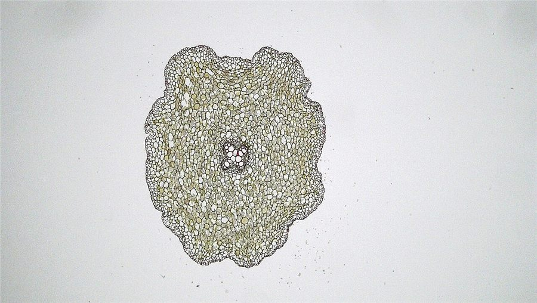
Why is the xylem in the middle of a root?
.jpg){kind=link}
In a dicot stem, the vascular bundles are in a ring near the outside. In a root, the xylem is in the centre. Which explanation fits best?
Choose an answer, and decide why, before you open the answer.
Show the answer
B. Each arrangement matches the main force on that organ.
Wind bends stems. A ring of strong, lignified tissue near the outside resists bending, in the same way that a hollow tube is stiff for its weight. Roots are pulled as the plant above sways, and a central strand resists pulling, like the core of a rope.
In the root, the central xylem is also close to where water arrives, after it has crossed the cortex from the root hairs.
Clearing up misconceptions
C is wrong: all the water the plant uses enters through its roots. Explanations about forces are a helpful way to remember the patterns, though plant anatomy also reflects how the tissues develop.
D3.1 Reproduction (Plant)
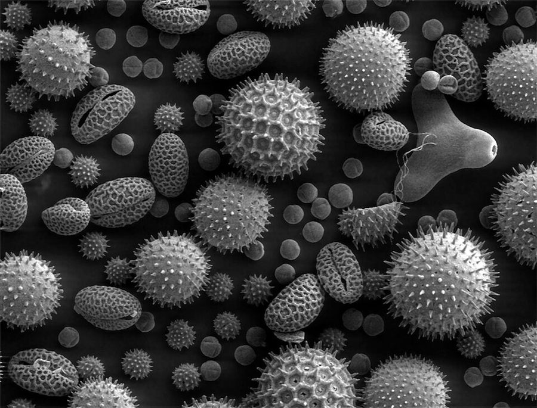
Do all flowers need petals?

Grass flowers are small and green, with no scent or nectar. Rose flowers are large, bright and scented. What explains the difference?
Choose an answer, and decide why, before you open the answer.
Show the answer
B. Petals, scent and nectar are adverts for pollinators. Wind needs no advert.
Insect-pollinated flowers spend energy on large coloured petals, scent and nectar, which attract insects that carry sticky pollen from flower to flower. Their anthers and stigma are usually inside the flower, where the insect brushes past them.
Wind-pollinated flowers instead hang their anthers out in the wind and make huge amounts of light, smooth pollen. Their stigmas are large and feathery, to catch pollen from the air. That is also why grass pollen causes hay fever.
Clearing up misconceptions
A and C confuse the job of the flower. The flower is a reproductive organ, and its structure matches how its pollen travels.
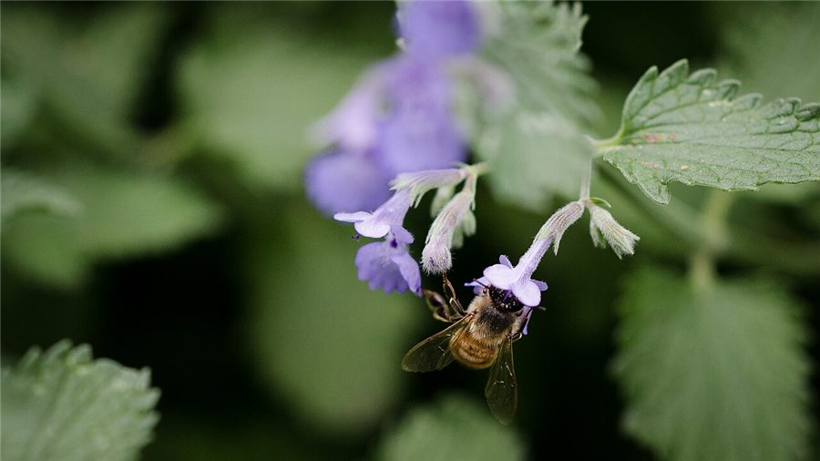
Pollination or fertilisation?
.jpg){kind=link}
A bee lands on a flower and leaves pollen on its stigma. Has fertilisation happened?
Choose an answer, and decide why, before you open the answer.
Show the answer
B. Not yet. That was pollination; fertilisation comes later, in the ovule.
Pollination is the transfer of pollen from an anther to a stigma. A pollen grain on a suitable stigma then grows a pollen tube down through the style to an ovule in the ovary.
A male gamete nucleus travels down the tube and fuses with the female gamete in the ovule. That fusion is fertilisation. The fertilised ovule develops into a seed, and the ovary into a fruit.
Clearing up misconceptions
The two words are often used as if they meant the same thing. Pollination is a transfer; fertilisation is the fusion of gametes.
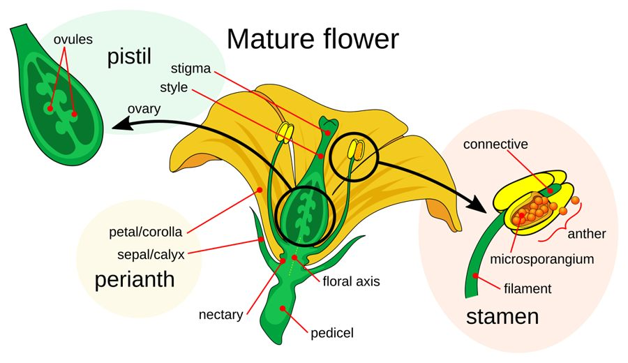
Why reject your own pollen?

Many plants have a system that stops their own pollen from fertilising their own ovules, even though the pollen lands right next to the stigma. What is the advantage?
Choose an answer, and decide why, before you open the answer.
Show the answer
B. More genetic variation, and less inbreeding.
In self-incompatible plants, the stigma or style recognises pollen carrying the same incompatibility alleles as the plant and stops it growing a tube. Only pollen from a genetically different plant can fertilise the ovules.
Cross-fertilisation combines alleles from two parents, which increases variation and avoids inbreeding, when harmful recessive alleles are more likely to come together. Other plants encourage cross-pollination in other ways, such as stamens and stigma that ripen at different times.
Clearing up misconceptions
The pollen is not poisonous; the plant simply blocks it. Some plants, such as many crops, do self-pollinate successfully, which can be useful when pollinators are scarce.
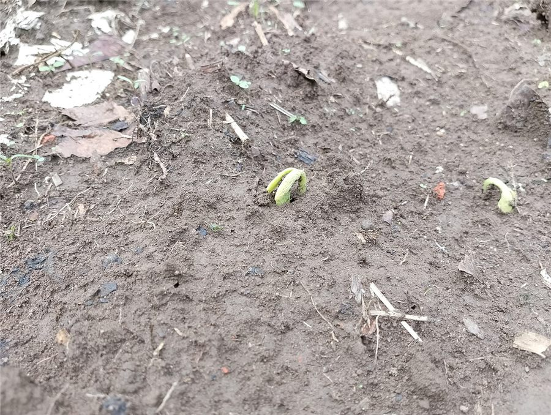
Is a dry seed alive?

A packet of dry seeds can sit on a shelf for years and still grow. Is a dry seed alive, and what does it need to germinate?
Choose an answer, and decide why, before you open the answer.
Show the answer
B. Alive but dormant. Water, oxygen and warmth start germination.
A seed contains an embryo plant and a food store. Dry, its metabolism is almost stopped, but its cells are alive: seeds that are heated or kept too long lose the ability to germinate.
Germination starts when the seed absorbs water. Enzymes become active and break down the food store, and aerobic respiration, which needs oxygen, releases energy for growth. A suitable temperature lets the enzymes work.
Clearing up misconceptions
Most seeds do not need soil or light to germinate, because they carry their own food store, which is why seeds sprout on damp paper towels. A few small seeds do need light, and the young seedling needs light once its food store runs out.
Unit 3 Genetics
D1.1 DNA replication
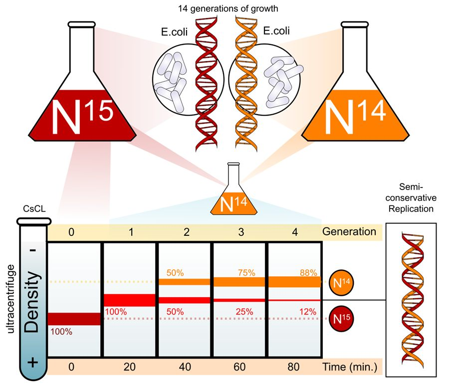
Half old, half new

A DNA molecule is copied once. What do the two new molecules contain?
Choose an answer, and decide why, before you open the answer.
Show the answer
B. Each new molecule keeps one original strand: replication is semi-conservative.
Helicase separates the two strands by breaking the hydrogen bonds between bases. Each strand is then a template: DNA polymerase adds free nucleotides that pair with the bases on it, A with T and C with G. Each new molecule therefore has one old strand and one new one.
Meselson and Stahl showed this in 1958. They grew bacteria with heavy nitrogen, moved them to normal nitrogen, and separated the DNA by density. After one round of replication, all the DNA was of intermediate density, which ruled out A.
Clearing up misconceptions
A is the model called conservative replication. It is not wrong to imagine it, since it was a serious hypothesis in the 1950s, but the evidence ruled it out.
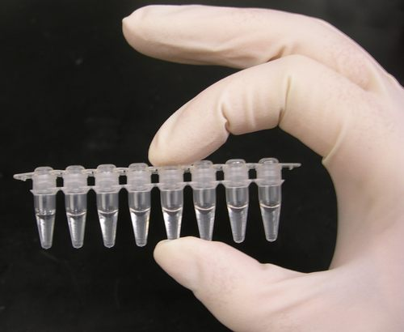
From one drop to a profile

Police find a tiny spot of blood at a crime scene, with far too little DNA to analyse. How does PCR solve this?
Choose an answer, and decide why, before you open the answer.
Show the answer
A. Each cycle doubles the target DNA: 30 cycles give about a billion copies.
In each cycle the DNA is heated to separate the strands, cooled so that short primers bind on either side of the target region, then warmed so that a heat-stable DNA polymerase copies each strand. Each cycle doubles the number of copies: 230 is just over a billion.
The heat-stable polymerase came from Thermus aquaticus, a bacterium found in hot springs in Yellowstone. The copies can then be separated by gel electrophoresis to make a DNA profile.
Clearing up misconceptions
B is wrong: DNA is copied from DNA, using nucleotides. C sounds plausible because each cell holds the whole genome, but one copy is far too little to see on a gel.
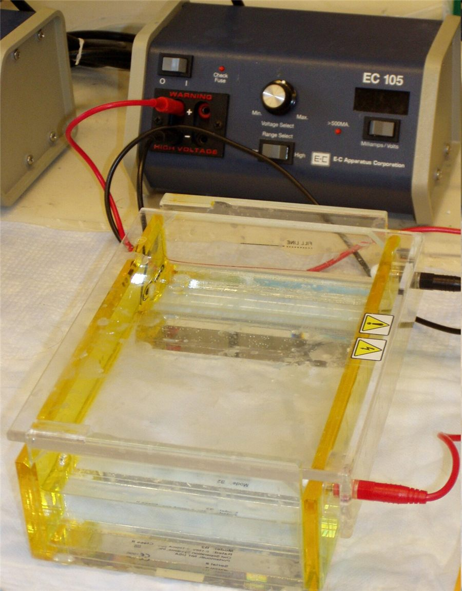
Which band travels furthest?

DNA fragments of different lengths are loaded into a gel, and a current is switched on. Which fragments travel furthest?
Choose an answer, and decide why, before you open the answer.
Show the answer
B. The shortest. The gel acts as a sieve.
DNA is negatively charged, because of its phosphate groups, so all fragments move towards the positive electrode. The gel is a mesh of fibres. Short fragments slip through it easily, while long ones get tangled and move more slowly.
After a set time, the fragments have spread out by length. Comparing them with a ladder of fragments of known lengths shows how long each one is.
Clearing up misconceptions
C is a clever answer. It is true that charge is proportional to length, so in free solution fragments would move at almost the same speed. It is the gel that separates them.
D1.2 Protein synthesis
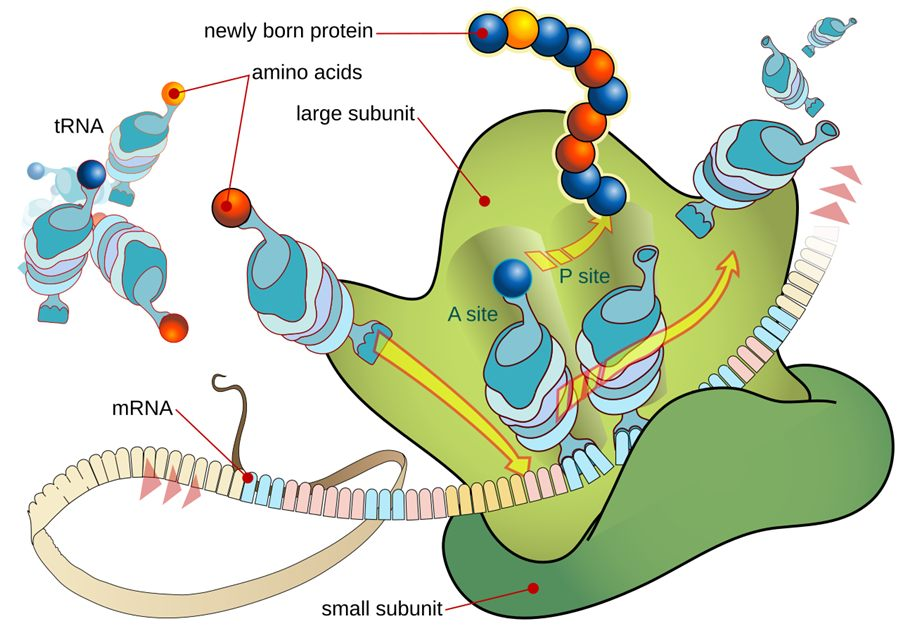
Why make a copy in RNA?

The instructions for making a protein are in DNA. Why do eukaryotic cells first copy a gene into mRNA instead of translating the DNA directly?
Choose an answer, and decide why, before you open the answer.
Show the answer
A. DNA stays safe in the nucleus; mRNA copies take the message to the ribosomes.
In eukaryotes, DNA stays in the nucleus, but ribosomes are in the cytoplasm. Transcription makes a short mRNA copy of one gene, which leaves through the nuclear pores. The template DNA is not changed or used up.
Many mRNA copies can be made from one gene, and each can be translated many times, so a cell can make a lot of protein quickly. When the protein is no longer needed, the mRNA is broken down.
Clearing up misconceptions
C is the wrong way round: RNA is much less stable than DNA, which is useful because mRNA messages are temporary. B is a twist on a real difference: RNA has uracil in place of thymine.
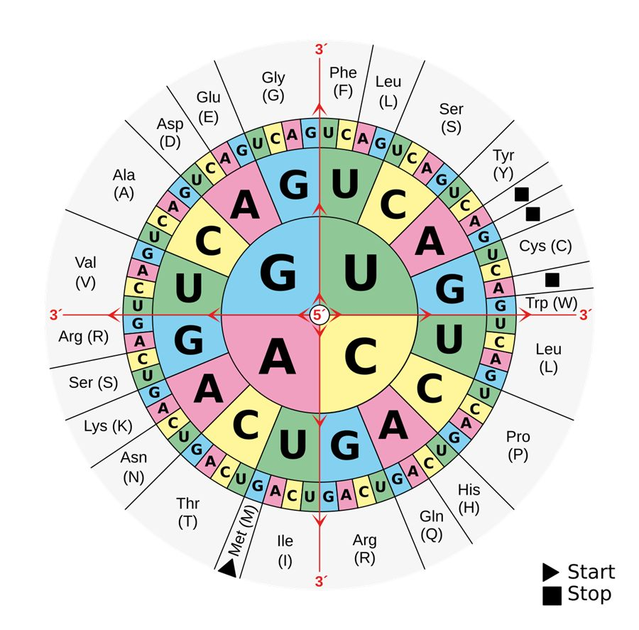
How many bases for each amino acid?

There are 4 different bases and 20 different amino acids. What is the smallest number of bases that could code for each amino acid?
Choose an answer, and decide why, before you open the answer.
Show the answer
C. Three. Fewer than three would not give enough combinations.
One base gives only 4 combinations, and two bases give 4 × 4 = 16, still fewer than 20. Three bases give 4 × 4 × 4 = 64 codons, which is more than enough.
The real code does use triplets. Because 64 codons code for 20 amino acids, most amino acids have more than one codon, so the code is described as degenerate. Three codons are stop signals that end translation.
Clearing up misconceptions
More codons than amino acids does not mean codons are wasted: the extra codons give some protection, because a change in the third base of a codon often still codes for the same amino acid.
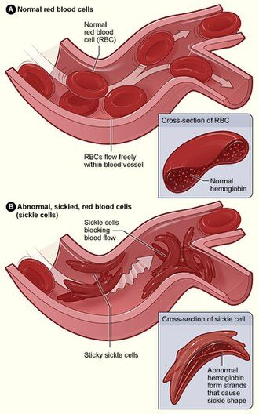
One base, one disease

A gene for haemoglobin is about 440 bases long. Can a change in just one base cause a serious disease?
Choose an answer, and decide why, before you open the answer.
Show the answer
B. Yes. One changed amino acid can change how a protein behaves.
In sickle cell disease, a single base substitution changes one codon, so the amino acid valine is put in place of glutamic acid in the beta chain of haemoglobin. When oxygen is low, the altered haemoglobin molecules stick together into long fibres, and the red blood cells become sickle-shaped.
The effect depends on where the change is and what it does. Because the code is degenerate, many substitutions give the same amino acid and have no effect.
Clearing up misconceptions
C goes too far. Some changes stop a protein being made, for example by creating a stop codon, but many have small effects or none. Each mutation has to be looked at on its own.
D1.3 Mutation and gene editing
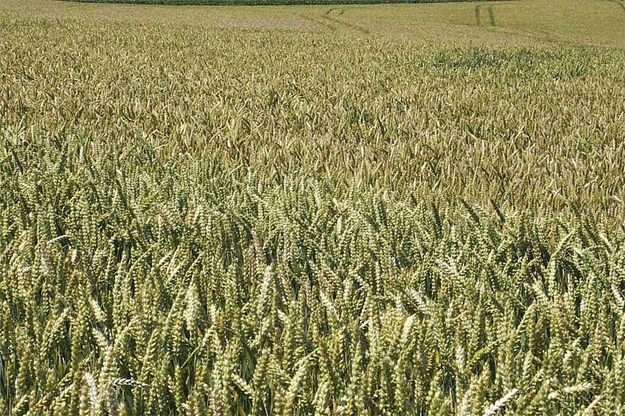
Are mutations always harmful?

Which statement about gene mutations is closest to the truth?
Choose an answer, and decide why, before you open the answer.
Show the answer
B. Most have little or no effect. A few are harmful, and fewer still are useful.
Many mutations fall outside genes or do not change the amino acid sequence. Of those that change a protein, many make it work less well, but a few produce a new allele that is useful in a particular environment, such as the alleles that let some adults digest lactose.
Mutation is the original source of new alleles, and so of genetic variation. Plant breeders have even used radiation to cause mutations deliberately: several barley varieties used in brewing came from mutation breeding.
Clearing up misconceptions
"Mutant" is used in films to mean dangerous, but every person carries dozens of new mutations not present in either parent, nearly all harmless. C is wrong too: beneficial mutations are rare, and selection acts on them.
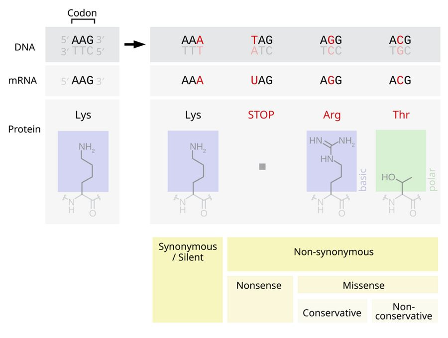
Swap a base or add one?

Near the start of a gene, which change usually does more damage to the protein?
Choose an answer, and decide why, before you open the answer.
Show the answer
B. The insertion, because it shifts the reading frame for every codon after it.
mRNA is read in triplets from a fixed starting point. A substitution changes at most one codon, so at most one amino acid. An inserted or deleted base shifts the grouping of every later base into codons, so almost every amino acid after it is changed, and a stop codon often appears early.
This is called a frameshift mutation. Inserting or deleting three bases does not cause a frameshift: it adds or removes one amino acid.
Clearing up misconceptions
C sounds fair, since each mutation involves one base. What matters is how the change affects the way the rest of the sequence is read.
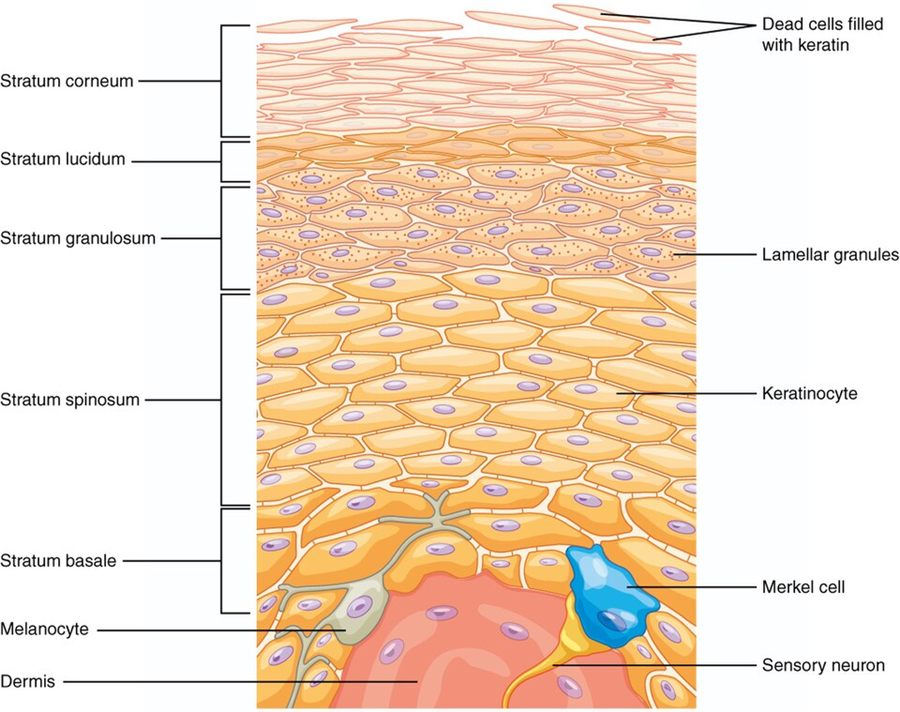
Will your sunburn pass to your children?

Ultraviolet light from repeated sunburn causes mutations in skin cells. Can these mutations be passed on to a person's children?
Choose an answer, and decide why, before you open the answer.
Show the answer
B. No. Only mutations in cells that make gametes are inherited.
Mutations in somatic (body) cells, such as skin cells, are passed only to the daughter cells of those cells. They can build up and lead to cancer in that person, but they are not in the sperm or eggs, so children do not inherit them.
Mutations in germ-line cells in the testes or ovaries can end up in gametes and be passed on, and then they are in every cell of the child.
Clearing up misconceptions
The size of the dose does not change who inherits a mutation; it only changes how likely mutations are. Mutagens include ultraviolet light, X-rays and some chemicals, such as those in tobacco smoke.
D2.1 Cell and nuclear division
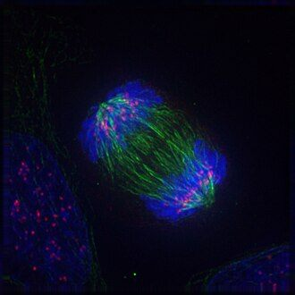
Why copy the DNA before dividing?

Before mitosis, a cell copies all of its DNA. Why?
Choose an answer, and decide why, before you open the answer.
Show the answer
A. So that both daughter cells get a full copy of the genome.
After replication, each chromosome consists of two identical sister chromatids joined at the centromere. In mitosis the chromatids are separated, and one goes to each pole, so each daughter cell gets one copy of every chromosome.
If the DNA were not copied first, there would be only one copy of each chromosome to share between two cells, and each daughter would be missing chromosomes.
Clearing up misconceptions
C confuses mitosis with meiosis, and even meiosis begins with replicated chromosomes. Cells do grow before dividing, but that is a separate step from replicating the DNA.
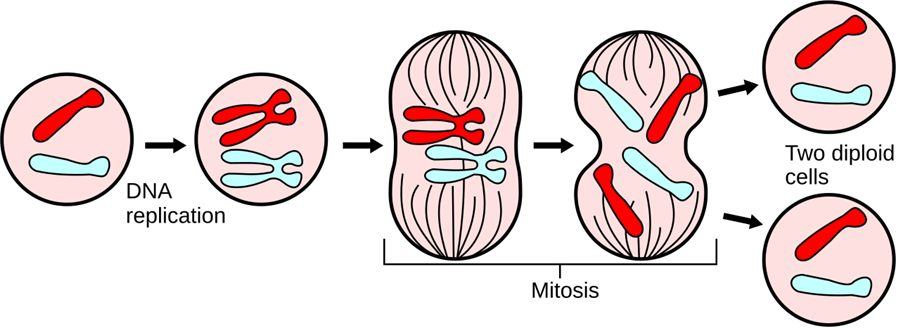
Are chromosomes X-shaped?

Chromosomes are often drawn as an X. When do they really look like that?
Choose an answer, and decide why, before you open the answer.
Show the answer
B. Only during division, after the DNA has been copied.
For most of the cell cycle, each chromosome is a single long DNA molecule, spread out in the nucleus and far too thin to see with a light microscope. After replication, it consists of two sister chromatids held together at the centromere.
At the start of division the chromosomes condense by supercoiling, becoming short and thick, and then the two joined chromatids look like an X.
Clearing up misconceptions
C is a nice trap: the name of the X chromosome has nothing to do with its shape, and it looks like the other chromosomes when condensed.
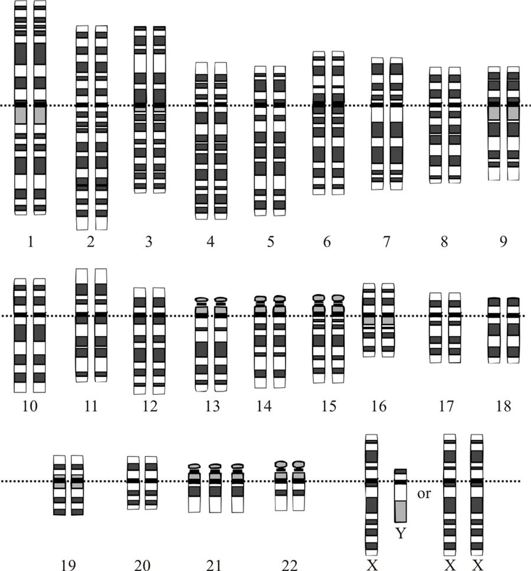
Why does the risk rise with age?

Most cases of Down syndrome come from an egg with an extra chromosome 21, and the chance rises with the mother's age. What is the main cause?
Choose an answer, and decide why, before you open the answer.
Show the answer
B. Non-disjunction: a pair of chromosomes fails to separate in meiosis.
In meiosis, each pair of homologous chromosomes should separate, so each gamete gets one of each. If chromosome 21 fails to separate, one gamete gets two copies and the other none. Fertilisation with a normal gamete then gives three copies of chromosome 21.
Human egg cells start meiosis before birth and then pause, sometimes for 40 years or more, until ovulation. The longer the pause, the more likely the chromosomes are to separate incorrectly.
Clearing up misconceptions
Down syndrome is caused by an extra whole chromosome, not by a gene mutation, and it does not come from anything the mother did in pregnancy, because the error happened when the egg was formed.
D3.2 Inheritance
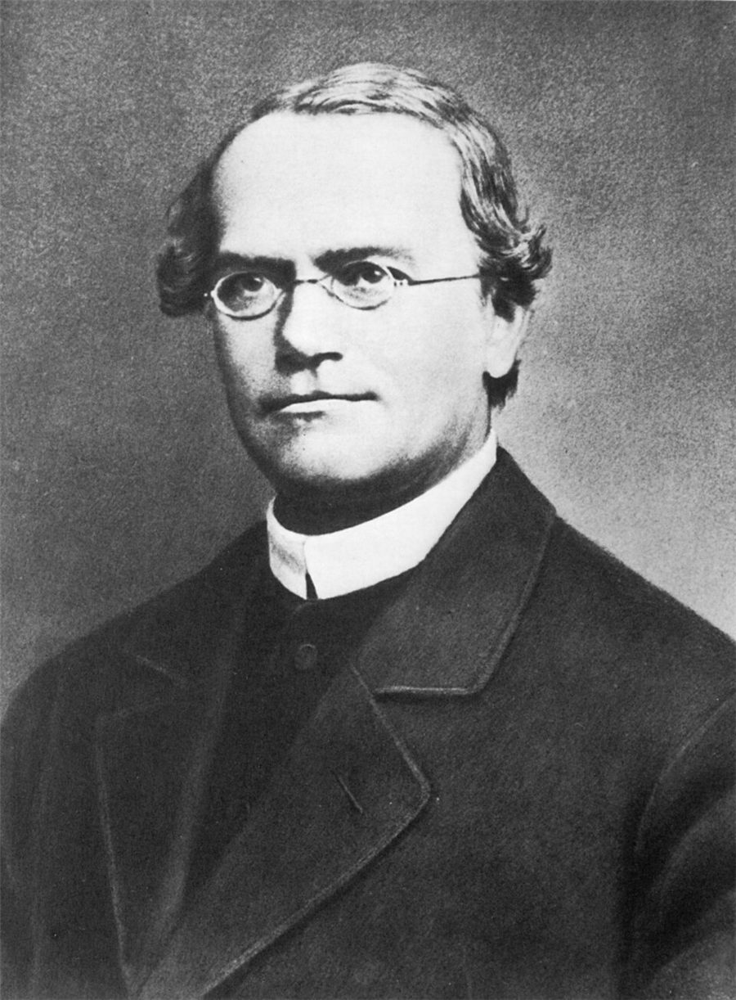
Are dominant alleles more common?

Which statement about dominant alleles is correct?
Choose an answer, and decide why, before you open the answer.
Show the answer
B. Dominant means "shows in a heterozygote", not "common" or "better".
A dominant allele affects the phenotype even when only one copy is present. That says nothing about how many people carry it. Huntington's disease is caused by a dominant allele, but it is rare, while blood group O is caused by a recessive allele and is the most common group in many countries.
How common an allele becomes depends on mutation, natural selection, chance and migration, not on whether it is dominant.
Clearing up misconceptions
Mendel's ratios such as 3 : 1 describe offspring of particular crosses, not whole populations, which is where the "dominant must be common" idea comes from.
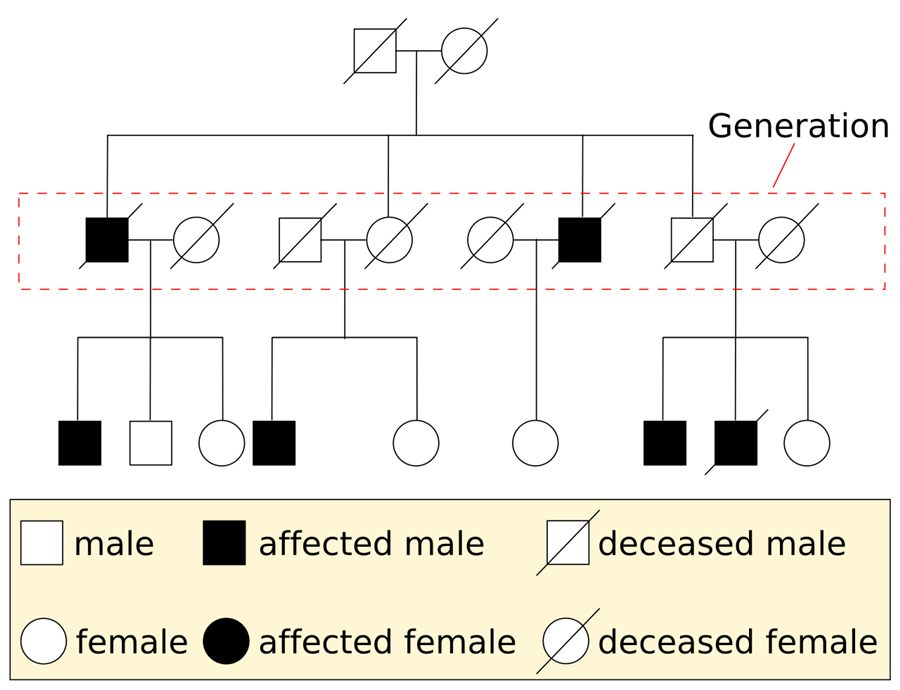
Healthy parents, affected child

Two healthy parents have a baby with phenylketonuria (PKU), a disease caused by a recessive allele. How is this possible?
Choose an answer, and decide why, before you open the answer.
Show the answer
B. Both parents are carriers, so each child has a 1 in 4 chance.
Each parent is heterozygous: one normal allele and one PKU allele. They are healthy, because one working allele is enough. Each passes on one allele at random, so a child has a 1 in 4 chance of getting the recessive allele from both.
PKU is a good example of genes and environment together. Babies are tested soon after birth, and a special diet low in phenylalanine prevents the brain damage the disease would cause.
Clearing up misconceptions
"Skipping a generation" is a description, not a cause: the allele was there all along in carriers. And 1 in 4 is a chance for each child; it does not mean that one child in every four will be affected.
Why mostly boys?

Haemophilia, a blood-clotting disorder, is far more common in boys than girls. Why?
Choose an answer, and decide why, before you open the answer.
Show the answer
B. It is X-linked and recessive, and boys have only one X chromosome.
The gene for a clotting factor is on the X chromosome. A male has one X and one Y, so if his X carries the recessive allele, he has haemophilia. A female has two X chromosomes and usually has one normal allele, so she is a carrier but not affected.
Sons get their X chromosome from their mother, so an affected boy usually inherits the allele from a carrier mother. Queen Victoria was a carrier, and the allele passed into several European royal families.
Clearing up misconceptions
A is the wrong way round: a father passes his Y chromosome, not his X, to his sons, so he cannot pass X-linked haemophilia to a son. C is wrong because the Y chromosome carries very few genes.
Unit 4 Biomolecules
A1.1 Water
Why don't lakes freeze solid?

In winter, ice forms on top of a lake while fish survive in liquid water below. Why does the lake not freeze from the bottom up?
Choose an answer, and decide why, before you open the answer.
Show the answer
B. Ice floats, and it insulates the water beneath it.
In ice, hydrogen bonds hold water molecules in an open lattice, so ice is less dense than liquid water and floats. Liquid water is densest at about 4 °C, so the water at the bottom of a deep lake stays at about 4 °C while colder water and ice stay on top.
The floating ice insulates the water below from the cold air, so lakes and seas rarely freeze solid. This lets aquatic life survive the winter.
Clearing up misconceptions
Most substances are denser as solids than as liquids. Water is unusual, and that is because of its hydrogen bonds.
Standing on water

A water strider can stand on the surface of a pond. What holds it up?
Choose an answer, and decide why, before you open the answer.
Show the answer
B. Surface tension, from the cohesion of water molecules.
Water molecules attract each other through hydrogen bonds. At the surface, the molecules are pulled inwards and sideways, so the surface behaves like a stretched skin. This is surface tension.
The strider spreads its weight over long legs covered in fine, waxy hairs that repel water, so its feet dent the surface without breaking through. Cohesion is also what lets water be pulled up xylem as a continuous column.
Clearing up misconceptions
A is wrong: the strider sits on the surface, not in the water like a boat. Push its legs through the surface, and it would sink.
Why does salt dissolve but oil not?

Salt dissolves in water, but olive oil forms a separate layer. Why?
Choose an answer, and decide why, before you open the answer.
Show the answer
B. Water is polar: it surrounds charged particles but not non-polar ones.
In a water molecule, oxygen pulls electrons more strongly than hydrogen, so the oxygen end is slightly negative and the hydrogen ends slightly positive. These ends are attracted to positive and negative ions, which are pulled apart and surrounded by water: the salt dissolves.
Oil molecules are mostly carbon and hydrogen, which share electrons almost equally, so they have no charged ends. Water molecules attract each other more than they attract oil, so the oil is pushed together into a separate layer.
Clearing up misconceptions
Density decides which layer is on top, not whether something dissolves. This difference is why many substances are carried dissolved in blood plasma and sap, while fats need special carriers.
A1.2 Nucleic acids
A firefly gene in a plant

In 1986, scientists put the firefly gene for the light-producing enzyme into tobacco plants, and the plants glowed. Why could a plant make a firefly protein?
Choose an answer, and decide why, before you open the answer.
Show the answer
B. The genetic code is almost universal.
All organisms use the same four bases, and almost all use the same codons for the same amino acids. So a gene from one organism can be transcribed and translated in another, and gives the same sequence of amino acids.
This shared code is strong evidence that all living things share a common ancestor. It is also what makes genetic modification possible, for example bacteria making human insulin.
Clearing up misconceptions
Fireflies and tobacco plants are very distantly related. There are a few small variations in the code, for example in mitochondria, but they are rare.
How much can four letters say?

DNA has only four bases. How many different sequences are possible for a stretch just 10 bases long?
Choose an answer, and decide why, before you open the answer.
Show the answer
C. Over a million: 410 = 1,048,576.
There are 4 choices for the first base, 4 for the second, and so on, so a 10-base sequence has 4 × 4 × ... ten times = 410 possible sequences, just over a million.
A typical gene is over a thousand bases long, and the human genome is about 3 billion base pairs. The number of possible sequences is practically unlimited, which is why four bases can store all the information needed to build an organism.
Clearing up misconceptions
B adds instead of multiplying. Information is stored in the order of bases, so each extra base multiplies the possibilities by four.
Strong strands, weak links

What holds the two strands of DNA together, and why does this matter?
Choose an answer, and decide why, before you open the answer.
Show the answer
B. Many weak hydrogen bonds: easy to unzip, but stable overall.
Within each strand, nucleotides are joined by strong covalent bonds in the sugar-phosphate backbone. Between the strands, complementary bases are joined by hydrogen bonds: two between A and T, and three between C and G.
Because each hydrogen bond is weak, enzymes can separate the strands for replication and transcription without breaking the backbone. Because there are so many, the double helix is stable.
Clearing up misconceptions
C is wrong: the phosphate groups are on the outside, and they are all negatively charged, so they repel each other rather than holding the strands together.
B1.1 Carbohydrates and lipids
Glucose you cannot digest

Starch and cellulose are both made of glucose. Why can sheep and cows live on grass, while we cannot digest cellulose at all?
Choose an answer, and decide why, before you open the answer.
Show the answer
B. Different links need a different enzyme, and only microbes make it.
Starch is made of alpha-glucose, and our amylase can hydrolyse its bonds. Cellulose is made of beta-glucose, with every other glucose turned over, so its bonds have a different shape and amylase cannot fit them.
Cows and sheep have huge populations of bacteria and other microbes in their gut that produce cellulase, and the animals absorb the products. For us, cellulose passes through as fibre.
Clearing up misconceptions
Acid alone cannot digest cellulose at body temperature. And cellulose is glucose; it is the way the glucose units are joined that makes the difference.
Why store fat instead of sugar?

Animals store energy for the long term mainly as fat, not glycogen. Why?
Choose an answer, and decide why, before you open the answer.
Show the answer
B. More energy per gram, with no water to carry.
Fat releases about 37 kJ per gram in respiration, compared with about 17 kJ for carbohydrate. Glycogen is also stored with water bound to it, roughly three grams of water for each gram of glycogen, while fat is stored almost dry.
Storing the same energy as glycogen would make an animal much heavier. Fat in adipose tissue also insulates, as in walruses and seals, and protects organs.
Clearing up misconceptions
C is the wrong way round: glycogen can be broken down very quickly, which is why it is used as a short-term store in liver and muscles.
Liquid oil, solid butter

At room temperature, olive oil is liquid but butter is solid. What is the main reason?
Choose an answer, and decide why, before you open the answer.
Show the answer
B. Kinks in unsaturated fatty acids stop them packing together.
A saturated fatty acid has only single bonds between carbon atoms, so its chain is straight. Straight chains pack together closely, so saturated fats such as butter are solid at room temperature.
Most double bonds in natural unsaturated fatty acids are cis, which puts a kink in the chain. Kinked chains cannot pack closely, so the fat melts at a lower temperature. Olive oil is rich in a monounsaturated fatty acid with one such kink.
Clearing up misconceptions
Oils are fats too. Whether a lipid is called a fat or an oil depends only on whether it is solid or liquid at room temperature.
B1.2 Proteins
Can you un-boil an egg?

Cooking turns clear, runny egg white into a white solid. Can you reverse it by cooling it?
Choose an answer, and decide why, before you open the answer.
Show the answer
B. No. The proteins are denatured and tangled together.
Each protein's 3D shape is held by weak bonds, such as hydrogen bonds and ionic bonds, between parts of the chain. Heat makes the chain vibrate until these bonds break and the protein unfolds. The unfolded chains then stick to each other, trapping water and making a solid.
Cooling does not untangle them. The peptide bonds are not broken, so the sequence of amino acids is unchanged, but the shape, and so the function, is lost. Extreme pH can denature proteins too.
Clearing up misconceptions
C is wrong: breaking peptide bonds is hydrolysis, which needs enzymes or strong acid. Cooked egg is still protein, and digestion later breaks it into amino acids.
Why must we eat protein?

Our cells can make many amino acids from other molecules. Why do we still need protein in our diet?
Choose an answer, and decide why, before you open the answer.
Show the answer
B. Nine essential amino acids can only come from food.
Human cells can make 11 of the 20 amino acids used in proteins, but not the other 9, which are called essential amino acids. Without them, cells cannot make the proteins they need, even if all the others are present.
Animal foods contain all of them in good proportions. A plant-based diet can provide them too, by combining foods such as grains and pulses like lentils.
Clearing up misconceptions
Adults need protein too, because body proteins are broken down and replaced all the time. Amino acids are not stored the way fat is.
How many proteins are possible?

Proteins are chains of 20 kinds of amino acid. How many different chains of just 100 amino acids are possible?
Choose an answer, and decide why, before you open the answer.
Show the answer
B. 20100: practically unlimited.
Each position in the chain can be any of 20 amino acids, so the number of possible sequences is 20 × 20 × ... a hundred times, which is 20100, roughly 10130. For comparison, the observable universe contains about 1080 atoms.
Many proteins are several hundred amino acids long, so the possible variety is even greater. Only a tiny fraction of possible sequences exist in living things.
Clearing up misconceptions
A multiplies 20 by 100, which counts positions, not combinations. This is the same reasoning as for DNA: information is in the order.
C1.1 Enzymes and metabolism
Is an enzyme used up?

An enzyme molecule catalyses a reaction. What happens to the enzyme afterwards?
Choose an answer, and decide why, before you open the answer.
Show the answer
B. It comes out unchanged and works again.
A catalyst speeds up a reaction without being used up. The substrate binds to the enzyme's active site, reacts, and the products leave, so the active site is free for the next substrate molecule.
Some enzymes are extremely fast: one molecule of catalase can break down millions of hydrogen peroxide molecules every second. That is why a small amount of enzyme can have a big effect.
Clearing up misconceptions
Enzymes are broken down and replaced eventually, like other proteins, but not because they have been used in a reaction. C mixes this up with denaturation, which destroys the shape of the active site.
Does the fridge denature enzymes?

Food keeps longer in a fridge. Is that because the cold denatures enzymes in the food and in microbes?
Choose an answer, and decide why, before you open the answer.
Show the answer
B. No. Cold slows enzymes down; it does not destroy them.
At low temperatures, substrate and enzyme molecules move more slowly, so they collide less often and fewer have enough energy to react. Reactions in food and in microbes slow down, including the growth of bacteria.
Denaturation needs a change in the enzyme's shape, which happens at high temperature or extreme pH. After cold, the enzymes are undamaged, so food spoils at the normal rate once it warms up.
Clearing up misconceptions
C is a common belief, but most bacteria survive in a fridge or freezer; they just grow very slowly. That is why food must still be cooked properly.
Enzymes that like it hot

Most human enzymes denature above about 45 °C, but bacteria in hot springs have enzymes that work best at 70 to 80 °C. How?
Choose an answer, and decide why, before you open the answer.
Show the answer
B. Their proteins are more strongly held together, so they keep their shape.
An enzyme's shape is held by bonds between amino acids in the chain. Enzymes from organisms that live in hot places have extra or stronger bonds, for example more ionic bonds and tighter packing, so they only unfold at higher temperatures.
Each enzyme has an optimum temperature: below it, the rate rises with temperature because of faster collisions; above it, the rate falls as the enzyme denatures. The hot-spring enzyme's optimum is simply much higher.
Clearing up misconceptions
These enzymes are proteins like ours, made from the same 20 amino acids. One of them, a DNA polymerase from Thermus aquaticus, is used every day in PCR.
C1.2 Cell respiration
Is respiration the same as breathing?

Which statement is correct?
Choose an answer, and decide why, before you open the answer.
Show the answer
B. Breathing is ventilation; respiration happens in every cell.
Cell respiration breaks down carbon compounds such as glucose, releasing energy that is used to make ATP. Aerobic respiration uses oxygen and produces carbon dioxide and water, and most of it happens in mitochondria.
Breathing, or ventilation, supplies the oxygen and removes the carbon dioxide. Plants, fungi and bacteria respire without breathing at all.
Clearing up misconceptions
In everyday language the words are mixed up, and some old textbooks call breathing "external respiration". In biology, respiration means the chemical process.
Do plants respire only at night?

Which is correct about respiration in plants?
Choose an answer, and decide why, before you open the answer.
Show the answer
B. All the time, day and night.
Every living plant cell needs ATP all the time, so it respires all the time, using oxygen and releasing carbon dioxide. Root cells and germinating seeds, which cannot photosynthesise, depend on it completely.
In daylight, photosynthesis in the leaves is usually faster than respiration, so the plant takes in carbon dioxide and gives out oxygen overall. At night, only respiration happens, so it gives out carbon dioxide.
Clearing up misconceptions
A comes from seeing only the net result. What we measure is the difference between the two processes.
Why keep panting after a sprint?

After a sprint, you keep breathing hard for several minutes even though you have stopped running. Why?
Choose an answer, and decide why, before you open the answer.
Show the answer
B. To repay the oxygen used to remove lactate and restore energy stores.
During a sprint, muscles need ATP faster than aerobic respiration can supply it, so some is made by anaerobic respiration, which produces lactate. Anaerobic respiration releases much less energy per glucose.
After the sprint, extra oxygen is used to convert lactate back and to rebuild the muscles' stores of energy-rich molecules. This extra oxygen use is sometimes called the oxygen debt.
Clearing up misconceptions
Lactate is often blamed for the muscle soreness felt a day or two later. That soreness is mostly from small injuries in the muscle, and lactate is cleared within an hour.
C1.3 Photosynthesis
Where does a tree's mass come from?
A seed grows into a tree weighing many tonnes. Where did most of the mass of its wood come from?
Choose an answer, and decide why, before you open the answer.
Show the answer
C. Mostly from carbon dioxide in the air.
Wood is mostly cellulose and lignin, made of carbon, hydrogen and oxygen. In photosynthesis, the carbon and most of the oxygen come from carbon dioxide; hydrogen comes from water. The tree builds itself mostly out of the air.
In the 1600s, Jan van Helmont grew a willow in a pot of weighed soil for five years. The tree gained about 74 kg, but the soil lost only about 57 g. He concluded, wrongly, that the mass came from water: carbon dioxide had not yet been discovered.
Clearing up misconceptions
Soil supplies minerals such as nitrate, but they are a tiny fraction of a plant's mass. B is partly right, because water supplies hydrogen, but most of the mass is carbon and oxygen from carbon dioxide.
Where does the oxygen come from?

Photosynthesis takes in carbon dioxide and water and releases oxygen. Which molecule does the oxygen come from?
Choose an answer, and decide why, before you open the answer.
Show the answer
B. From water.
In the light-dependent reactions, water molecules are split to provide electrons and hydrogen ions. The oxygen atoms left over are released as oxygen gas. The carbon dioxide is used to make carbon compounds, and its oxygen ends up in those compounds and in water.
This was shown in the 1940s using water labelled with a heavy isotope of oxygen: the labelled oxygen appeared in the oxygen gas. The oxygen in our air came from billions of years of photosynthesis by cyanobacteria and plants.
Clearing up misconceptions
A is a natural guess, because CO2 contains oxygen and the equation seems to swap it for O2. The equation shows what goes in and out overall, not where each atom goes.
Why are leaves green?

Why do most leaves look green?
Choose an answer, and decide why, before you open the answer.
Show the answer
B. Chlorophyll absorbs red and blue more than green.
The colour we see is the light that is not absorbed. Chlorophyll absorbs strongly in the blue and red parts of the spectrum and less in the green, so leaves send back more green light.
Green light is not wasted entirely: an action spectrum shows that plants still photosynthesise in green light, more slowly, partly because other pigments help and because green light passes deeper into the leaf.
Clearing up misconceptions
A is the reverse of the truth. Chromatography shows that leaves contain several pigments, including yellow and orange carotenoids, which you see in autumn when chlorophyll breaks down.
Unit 5 Cells
A2.2 Cell structure
Do plant cells have mitochondria?

Plant cells have chloroplasts. Do they also need mitochondria?
Choose an answer, and decide why, before you open the answer.
Show the answer
B. Yes. Plant cells respire, so they need mitochondria too.
Chloroplasts use light energy to make carbon compounds. Mitochondria release energy from those compounds by aerobic respiration to make ATP. Plant cells need both: photosynthesis makes the food, and respiration uses it.
Every living plant cell has mitochondria, including leaf cells. Root cells and cells in seeds have no chloroplasts at all, so they depend entirely on sugars made elsewhere and on their mitochondria.
Clearing up misconceptions
Textbook diagrams sometimes leave mitochondria out of plant cells to make the chloroplasts stand out. That makes A a common mistake.
Can more magnification show a ribosome?
.JPG){kind=link}
A ribosome is about 25 nm across. Could you see one with a light microscope if you magnified the image enough?
Choose an answer, and decide why, before you open the answer.
Show the answer
B. No. The limit is resolution, not magnification.
Resolution is the smallest distance between two points that can still be seen as separate. Because of the wavelength of light, light microscopes cannot resolve details closer than about 0.2 µm (200 nm). A ribosome is about 8 times smaller than that.
Electron microscopes use beams of electrons, which have a much shorter wavelength, so they can resolve detail down to below a nanometre. That is how ribosomes, membranes and viruses were first seen.
Clearing up misconceptions
Magnifying a blurred image gives a bigger blurred image. Stains increase contrast, but they cannot improve resolution beyond the limit.
Is a bacterium a small animal cell?

Which is the best description of a prokaryotic cell compared with a eukaryotic cell?
Choose an answer, and decide why, before you open the answer.
Show the answer
B. A different design, not a smaller version.
Prokaryotes such as bacteria have a cell wall, a plasma membrane, cytoplasm, ribosomes and DNA, the structures all cells share. But their DNA is a single circular molecule in the cytoplasm, not inside a nucleus, and they have no mitochondria, chloroplasts, ER or Golgi.
Their ribosomes are smaller (70S) than those in the cytoplasm of eukaryotes (80S). Many antibiotics work by targeting prokaryotic structures, such as their ribosomes and cell walls.
Clearing up misconceptions
Prokaryotes are fully living cells, and they were the only life on Earth for well over a billion years. C confuses "simple" with "not alive".
B2.1 Membranes and membrane transport
Why can oxygen cross but sodium cannot?

Oxygen diffuses straight through a cell membrane, but sodium ions, which are even smaller, cannot. Why?
Choose an answer, and decide why, before you open the answer.
Show the answer
B. Charge, not size. The hydrophobic core blocks ions.
The core of the bilayer is made of the fatty acid tails of phospholipids, which are non-polar. Small non-polar molecules such as oxygen and carbon dioxide dissolve in it and diffuse straight through.
Ions are charged and surrounded by a shell of water molecules, so they cannot enter the non-polar core. They cross only through channel proteins or pumps, which means cells can control which ions enter and leave, and when.
Clearing up misconceptions
Size matters for large molecules, but for ions charge matters more. This is why nerve impulses can be controlled: sodium and potassium ions only cross where channels open.
Moving uphill

Root hair cells can take in nitrate ions even when there are more nitrate ions inside the cell than in the soil water. How?
Choose an answer, and decide why, before you open the answer.
Show the answer
B. Active transport: pump proteins use ATP.
Diffusion only moves substances down a concentration gradient. To move ions up a gradient, cells use pump proteins, which change shape when ATP is used, carrying specific ions across the membrane.
Active transport needs a supply of ATP, so it stops if respiration stops. Root cells starved of oxygen take up far fewer mineral ions.
Clearing up misconceptions
Osmosis is the movement of water, not of ions. A is true of diffusion, but cells are not limited to diffusion.
Is a membrane a solid sheet?

Which description of a cell membrane fits the evidence best?
Choose an answer, and decide why, before you open the answer.
Show the answer
B. A fluid mosaic: phospholipids and proteins move sideways.
Phospholipids in a membrane move sideways all the time, swapping places with their neighbours, so the membrane behaves like a thin film of liquid. Proteins are scattered through it like the pieces of a mosaic.
In 1970, scientists fused a mouse cell and a human cell and labelled their membrane proteins with two different coloured dyes. Within about 40 minutes the colours had mixed all over the hybrid cell, showing that the proteins move.
Clearing up misconceptions
The membrane is fluid but not structureless: the bilayer always keeps its two layers, and some proteins are anchored to the cytoskeleton. Cholesterol helps control how fluid it is.
B2.2 Organelles and compartmentalization
 Why have compartments?
Why have compartments?
Lysosomes contain enzymes that can digest proteins, lipids and nucleic acids. Why are they kept inside a membrane?
Choose an answer, and decide why, before you open the answer.
Show the answer
B. To keep harmful enzymes separate and concentrated.
Compartments let a cell keep incompatible processes apart. Digestive enzymes in lysosomes work at an acidic pH and are kept away from the cell's own molecules.
Compartments also concentrate enzymes and substrates for a particular pathway in a small space, as in mitochondria for aerobic respiration and chloroplasts for photosynthesis, which makes the reactions faster.
Clearing up misconceptions
Organelles are not just decoration seen in diagrams. Each has a membrane that controls what enters and leaves, so each has its own internal conditions.
Why keep DNA in a nucleus?

Prokaryotes translate mRNA while it is still being made. Eukaryotes keep their DNA in a nucleus. What advantage does this give?
Choose an answer, and decide why, before you open the answer.
Show the answer
B. mRNA can be processed before it is translated.
In prokaryotes, ribosomes start translating mRNA as soon as it is made, so there is no chance to change it. In eukaryotes, transcription happens in the nucleus and translation in the cytoplasm, so the newly made mRNA can be modified first, for example by removing parts of it.
The nuclear membrane also helps protect the DNA and controls what passes in and out through its pores.
Clearing up misconceptions
C is wrong: ribosomes are made partly in the nucleus but work in the cytoplasm or on the rough ER.
B2.3 Cell specialization
Why is an egg cell so big?

The human egg cell is one of the largest cells in the body, about 0.1 mm across. Why?
Choose an answer, and decide why, before you open the answer.
Show the answer
B. It provisions the early embryo.
After fertilisation, the zygote divides several times before it can take in nutrients from the mother. The egg's large cytoplasm contains nutrients, mitochondria and other organelles that support these first divisions.
Sperm cells are tiny by comparison: they carry little more than their nucleus and the mitochondria needed to power their tail. Cell size is one way cells are specialised.
Clearing up misconceptions
The egg is a single cell, and as a gamete it has only half the chromosomes of a body cell. Size here comes from cytoplasm, not DNA.
Can any cell become any other?

Which statement about stem cells is correct?
Choose an answer, and decide why, before you open the answer.
Show the answer
B. The potency of stem cells falls as development goes on.
A zygote is totipotent: it can form every cell of the body and the placenta. Cells from the inner part of a blastocyst are pluripotent, able to form any body cell type. As cells differentiate, they lose most of this ability.
Adults still have stem cells in niches such as the bone marrow and skin. They are multipotent: bone marrow stem cells, for example, form the different types of blood cell. They allow tissues to be repaired and replaced.
Clearing up misconceptions
Most specialised cells, such as nerve and muscle cells, cannot change into other types. C is wrong: adult stem cells are used in bone marrow transplants.
D2.3 Water potential
Why don't plant cells burst?

Red blood cells placed in pure water swell and burst. Plant cells in pure water swell but do not burst. Why?
Choose an answer, and decide why, before you open the answer.
Show the answer
B. The cell wall: pressure builds until no more water can enter.
Water enters both cells by osmosis, because the cytoplasm has a higher solute concentration than pure water. A red blood cell has only its membrane, which stretches until it tears.
A plant cell's strong cellulose wall resists expansion. As the cell swells, the wall pushes back, creating turgor pressure, until no more water enters overall. The cell is then turgid, which keeps non-woody plants upright.
Clearing up misconceptions
A is wrong: plant cells have aquaporins. Some freshwater protists do pump water out, using contractile vacuoles, but plant cells rely on their walls.
Why are drips salty?
Fluids given into a vein, and solutions used to store organs for transplant, contain salts at about the concentration of body fluids. Why not use pure water?
Choose an answer, and decide why, before you open the answer.
Show the answer
B. Isotonic solutions keep cells from gaining or losing water.
A 0.9% sodium chloride solution has about the same solute concentration as blood plasma, so water moves into and out of red blood cells at the same rate. The cells keep their normal shape.
Pure water, which is hypotonic, would enter red blood cells by osmosis and burst them. A very salty, hypertonic solution would draw water out and shrink them. Organs for transplant are kept in cold isotonic solutions for the same reason.
Clearing up misconceptions
Saline does contain a little sodium the body needs, but that is not why it is used. The key idea is matching the solute concentration of body fluids.
Wilting and crisping

A wilted lettuce leaf becomes crisp again after a few minutes in cold water. What happened?
Choose an answer, and decide why, before you open the answer.
Show the answer
B. Water entered by osmosis, and the cells became turgid again.
When a leaf loses water, its cells lose turgor pressure and become flaccid, so the leaf droops. In pure water, which has a lower solute concentration than the cell sap, water enters the cells by osmosis.
As water enters, each cell swells against its wall, turgor pressure rises, and the tightly packed, firm cells make the leaf rigid again.
Clearing up misconceptions
In a concentrated salt or sugar solution the opposite happens: water leaves the cells, which can become plasmolysed, with the membrane pulling away from the wall. That is why salad wilts in dressing.
Unit 6 Biodiversity
A3.1 Diversity of organisms
Zebra plus horse

Zebras and horses can mate and produce a zebroid. Are they the same species?
Choose an answer, and decide why, before you open the answer.
Show the answer
B. No. The hybrids are almost always infertile.
The biological species concept defines a species as a group of organisms that can interbreed to produce fertile offspring. Zebras and horses have different chromosome numbers, so their hybrids usually cannot make normal gametes.
Because the hybrids cannot breed, the two groups' gene pools stay separate. The same is true of mules, from a horse and a donkey.
Clearing up misconceptions
The species concept has limits: it cannot be applied to fossils or to organisms that reproduce asexually, and some hybrids between species are fertile. Biologists use several ways to recognise species.
More chromosomes, more complex?
Humans have 46 chromosomes. Does a species with more chromosomes have a more complex body?
Choose an answer, and decide why, before you open the answer.
Show the answer
B. No. Chromosome number is not a measure of complexity.
The same genes can be packaged into many small chromosomes or a few large ones. Chromosome numbers change during evolution when chromosomes fuse or split, or when the whole set is doubled, which is common in plants.
Humans have 23 pairs, while chimpanzees have 24: our chromosome 2 formed when two ancestral chromosomes fused. One fern species has over 1400 chromosomes.
Clearing up misconceptions
Both A and C come from assuming humans must be at the top of every scale. Chromosome number is a feature of each species, not a ranking.
How different are two people's genomes?

Compare the genomes of two unrelated people. Roughly what fraction of their DNA bases differ?
Choose an answer, and decide why, before you open the answer.
Show the answer
B. About 0.1%, mostly SNPs.
Two people's genomes are about 99.9% identical in base sequence. Most differences are single-nucleotide polymorphisms (SNPs), positions where one base differs. In a genome of about 3 billion base pairs, 0.1% is still a few million differences.
These differences contribute to variation in traits and disease risk, and some are used in forensic and ancestry testing.
Clearing up misconceptions
C is wrong: apart from identical twins, everyone's genome is unique. The tiny percentage hides a large number of differences.
A4.1 Evolution and speciation
Did humans evolve from chimpanzees?

Which statement is correct?
Choose an answer, and decide why, before you open the answer.
Show the answer
B. We share a common ancestor; neither evolved from the other.
DNA and protein sequences show that chimpanzees and bonobos are our closest living relatives. The differences between our sequences, compared with the rate at which mutations build up, suggest our lineages split about 6 to 7 million years ago.
Since then, both lineages have changed. Chimpanzees are not an earlier stage of humans: they are a modern species with their own long history of evolution.
Clearing up misconceptions
"If we evolved from chimps, why are there still chimps?" rests on A, which is not what evolution says. Think of cousins, who share grandparents but are not descended from each other.
Bat wings and bird wings

Bats and birds both fly with wings. How should their wings be described?
Choose an answer, and decide why, before you open the answer.
Show the answer
B. Analogous as wings, homologous as forelimbs.
Homologous structures share an origin from a common ancestor, even if they now do different jobs. Bat and bird wings both contain the same set of forelimb bones as a human arm, so as forelimbs they are homologous.
But their ancestors did not fly, and wings evolved separately in each group, built in different ways: from skin stretched between long fingers in bats, from feathers in birds. As wings, they are analogous, a result of convergent evolution.
Clearing up misconceptions
A uses the wrong test: doing the same job makes structures analogous. Homology is about shared ancestry, not shared function.
Cabbage, broccoli and kale

Cabbage, broccoli, cauliflower, kale and Brussels sprouts look very different. Where did they come from?
Choose an answer, and decide why, before you open the answer.
Show the answer
B. All from wild cabbage, by selective breeding.
Wild cabbage grows on sea cliffs in Europe. Farmers saved seed from plants with the largest leaves, or tightest buds, or thickest stems, and over many generations each line changed a great deal: kale for leaves, cabbage for the terminal bud, broccoli and cauliflower for the flower heads.
Selective breeding shows that heritable variation plus selection can change a population a great deal, which is evidence that natural selection can do the same over longer times.
Clearing up misconceptions
These crops were developed long before genetic engineering existed. They are all still the same species, Brassica oleracea, and can cross with each other.
A4.2 Conservation of biodiversity
Extinction is natural, so why worry?

Most species that have ever lived are extinct. Why are biologists alarmed about extinctions today?
Choose an answer, and decide why, before you open the answer.
Show the answer
B. The rate, not the fact. Extinctions are much faster than normal.
Species have always gone extinct, at a slow background rate, and there have been five mass extinctions in Earth's history. Estimates of today's rate, from well-studied groups such as mammals, birds and amphibians, are far above the background rate.
The main causes are habitat loss, overexploitation, invasive species, pollution and climate change. The Caribbean monk seal, hunted for its oil, was declared extinct in 2008.
Clearing up misconceptions
The comparison matters: the question is not whether extinction happens, but how fast compared with how fast new species form.
Can zoos save species on their own?
.jpg){kind=link}
Could we protect biodiversity by keeping endangered species in zoos and seeds in seed banks?
Choose an answer, and decide why, before you open the answer.
Show the answer
B. Ex situ methods help, but in situ protection is essential.
Zoos and seed banks (ex situ conservation) can save species from immediate extinction and keep genetic diversity. The European bison died out in the wild in the 1920s; it was bred from a few dozen zoo animals and released back into forests.
But that only worked because forest habitat was protected. Most species cannot be kept in captivity, and species depend on interactions with others. Protecting and restoring habitats (in situ conservation) is needed alongside.
Clearing up misconceptions
C goes too far the other way. Conservation needs several approaches together.
 Is biodiversity just the number of species?
Is biodiversity just the number of species?

What does biodiversity include?
Choose an answer, and decide why, before you open the answer.
Show the answer
B. Ecosystems, species and genes.
Biodiversity is the variety of life at every level. Ecosystem diversity is the range of habitats and communities; species diversity includes both how many species there are and how evenly they are represented; genetic diversity is the variation within each species.
Genetic diversity matters because it lets populations adapt, for example to new diseases. A species can survive in large numbers but lose much of its genetic diversity, which makes it more vulnerable.
Clearing up misconceptions
A is the everyday meaning. It is a useful measure, but it leaves out two of the three levels.
D4.1 Natural selection
Did the moths change colour to hide?

In industrial England, dark peppered moths became much more common as soot blackened trees. How did this happen?
Choose an answer, and decide why, before you open the answer.
Show the answer
B. Selection by birds made the existing dark form more common.
The dark form was caused by a mutation in a single gene, and it was rare before the 1800s. On soot-darkened bark, pale moths were easier for birds to see. Dark moths were more likely to survive and pass on the dark allele, so it became more common over generations.
After clean-air laws in the 1950s, trees became paler again and the dark form became rare. Experiments and DNA studies have confirmed the role of the mutation and of bird predation.
Clearing up misconceptions
A is the most common misconception about evolution: individuals do not change their genes to suit the environment. Populations change, as the proportions of different alleles change.
Will a bodybuilder's children be stronger?

A bodybuilder spends years building huge muscles. Will their children inherit bigger muscles because of it?
Choose an answer, and decide why, before you open the answer.
Show the answer
B. No. Only inherited variation is passed on.
Training changes muscle cells, but it does not change the base sequence of DNA in sperm or eggs. Only differences caused by genes can be inherited, so only those can be selected over generations.
The idea that acquired characteristics are inherited is linked with Jean-Baptiste Lamarck, before Darwin. It was widely held at the time, and even Darwin accepted part of it, but genetics showed it was not the way traits are passed on.
Clearing up misconceptions
Children may share an interest in sport and good nutrition, and they may inherit genes that help muscle growth. But the effect of the parent's training itself is not inherited.
Why such a costly tail?

A peacock's huge tail makes flying harder and attracts predators. How could natural selection produce it?
Choose an answer, and decide why, before you open the answer.
Show the answer
B. Sexual selection: choosy females favour the display.
Sexual selection happens when individuals differ in their success at getting mates. If females choose males with more impressive displays, males with those traits have more offspring, and the alleles for them spread, even if the traits cost the males in survival.
Experiments with birds have shown females preferring more elaborate displays. One idea is that a costly display is an honest signal of a healthy male.
Clearing up misconceptions
Natural selection is not only about survival. What counts is how many offspring survive to pass on the alleles.
B4.2 Ecological niches
Can two species share one niche?

Grey squirrels were brought to Britain from North America in the 1800s. Red squirrels have since disappeared from most of England and Wales. What does this suggest?
Choose an answer, and decide why, before you open the answer.
Show the answer
B. Competitive exclusion: two species with the same niche cannot coexist for ever.
Red and grey squirrels eat similar foods and live in similar woodland. Grey squirrels digest acorns better and store more fat, and they also carry squirrelpox, which kills red squirrels but rarely harms greys.
The competitive exclusion principle says that two species cannot occupy exactly the same niche in the same place for long. Where niches overlap, one species usually outcompetes the other, or both shift to narrower realized niches.
Clearing up misconceptions
Being larger is not what decides the outcome. Red squirrels survive where greys are kept out, for example on some islands and in conifer forests.
Is a mushroom a plant?
.jpg){kind=link}
Mushrooms grow in the ground or on wood, a bit like plants. How do fungi get their food?
Choose an answer, and decide why, before you open the answer.
Show the answer
B. They digest food outside their bodies and absorb it.
Fungi have no chloroplasts and cannot photosynthesise. Their thread-like hyphae grow through dead material and release enzymes that break it down, and the small molecules produced are absorbed.
Saprotrophic fungi and bacteria are the main decomposers, recycling elements such as carbon and nitrogen from dead organisms. Fungi are in their own kingdom, and are more closely related to animals than to plants.
Clearing up misconceptions
A few fungi do trap tiny worms, but that is unusual. A mushroom is only the fruiting body; most of the fungus is the network of hyphae.
Plant or animal?

Euglena is a single cell that swims and has chloroplasts. In the dark, it can absorb food from its surroundings. How should its nutrition be described?
Choose an answer, and decide why, before you open the answer.
Show the answer
B. Mixotrophic: both autotrophic and heterotrophic.
In light, Euglena photosynthesises like a plant. In the dark, or when light is poor, it can take in organic compounds from the water and use those instead.
Mixotrophs show that "plant" and "animal" are not the only possibilities. Single-celled eukaryotes such as Euglena belong to groups outside the plant and animal kingdoms.
Clearing up misconceptions
Neither chloroplasts nor movement settle the question on their own: many plants move parts, and some animals, such as certain sea slugs, keep chloroplasts from the algae they eat.
Unit 7 Ecosystems
B4.1 Adaptation to environment
Why are coral reefs only in some seas?

Reef-building corals are found only in warm, clear, shallow tropical seas. Why?
Choose an answer, and decide why, before you open the answer.
Show the answer
A. The corals' algae need light, and the corals need warmth.
Reef-building corals have single-celled algae living inside their tissues. The algae photosynthesise and supply much of the coral's food, so they need sunlight, which only penetrates well through clear, shallow water.
The corals also need water roughly between 20 and 30 °C and of normal salinity. Water that is too hot causes the algae to be expelled, which is coral bleaching.
Clearing up misconceptions
Some corals live in cold, deep water, but they do not build large reefs, because they have no algae and grow slowly.
Spines instead of leaves

Most cacti have spines instead of broad leaves. How does this help them in a hot desert?
Choose an answer, and decide why, before you open the answer.
Show the answer
B. Less surface for water loss, and protection.
Broad leaves have a large surface area and many stomata, so they lose a lot of water. Cacti have spines, which are modified leaves, and do their photosynthesis in thick green stems with a waxy surface and few stomata.
The stem stores water, and the spines protect it from animals that would eat it for that water. Many cacti open their stomata at night, when it is cooler, to take in carbon dioxide.
Clearing up misconceptions
The water is stored in the stem, not in the spines. Some spines do shade the stem or collect dew, but their main roles are defence and reducing leaf area.
Rich forest, poor soil
Tropical rainforests have huge amounts of plant life, yet their soils are often poor in nutrients. Why?
Choose an answer, and decide why, before you open the answer.
Show the answer
B. The nutrients are in the living things, not the soil.
Warmth and moisture mean that dead leaves decompose within weeks, and roots and fungi take up the released nutrients almost at once. So most of the nutrients are in living biomass at any time.
Heavy rain also leaches soluble nutrients out of the soil. When forest is cleared and burned, a short flush of nutrients is soon used up or washed away, which is why cleared rainforest often makes poor farmland.
Clearing up misconceptions
The lush growth gives the impression of rich soil. Plants get carbon from the air, but minerals such as nitrogen and phosphorus must come from the soil.
C4.1 Populations and communities
Counting animals you cannot see
_(5-28-2015)_quoddy_head,_washington_co,_maine_-02_(18988733919).jpg){kind=link}
Ecologists catch 40 voles in a wood, mark them and release them. A week later they catch 50 voles, of which 10 are marked. What is the best estimate of the population?
Choose an answer, and decide why, before you open the answer.
Show the answer
B. 200, using the Lincoln index.
If marked voles have mixed back in evenly, the fraction marked in the second sample should match the fraction marked in the whole population. Here 10 out of 50, one-fifth, are marked, so the 40 marked voles are one-fifth of the population: 40 × 5 = 200.
The Lincoln index puts this as: population = (number marked first time × number caught second time) ÷ number marked in the second sample = (40 × 50) ÷ 10 = 200.
Clearing up misconceptions
A simply adds the two catches. The method only works if the marks do not affect survival, marked animals mix back in, and no animals are born, die or move in or out between samples.
Who controls whom?
.jpg){kind=link}
In Canada, lynx and snowshoe hare numbers both rise and fall in cycles of about 10 years. What drives the cycles?
Choose an answer, and decide why, before you open the answer.
Show the answer
B. Predator and prey control each other, along with food supply.
When hares are common, lynx have plenty of food, survive and breed well, so lynx numbers rise, a little after the hares. More lynx eat more hares, and the hares also run short of winter food, so hare numbers fall. Then lynx starve or breed less, and their numbers fall too.
These are density-dependent factors: their effect grows as the population gets bigger. They act as negative feedback, pulling numbers back towards the carrying capacity.
Clearing up misconceptions
A gives only half the story. Experiments that added food or kept out predators showed that both food and predators affect the hare cycle.
Bacteria in the roots

Pea and bean plants have swellings on their roots packed with bacteria. What is the relationship between the plant and the bacteria?
Choose an answer, and decide why, before you open the answer.
Show the answer
B. Mutualism: both partners benefit.
The bacteria turn nitrogen gas from the air into ammonium, which the plant uses to make amino acids. In return, the plant supplies them with carbon compounds from photosynthesis and a protected place to live.
This is why legumes grow well in soil poor in nitrogen, and why farmers grow them in crop rotations to improve the soil.
Clearing up misconceptions
A is a reasonable first guess, since the bacteria do take sugars. But the plant gains more than it loses, and plants without the bacteria grow less well in poor soil.
C4.2 Transfers of energy and matter
Is energy recycled in an ecosystem?
.jpg){kind=link}
Decomposers break down dead organisms, and the elements are reused. Is energy recycled in the same way?
Choose an answer, and decide why, before you open the answer.
Show the answer
B. Matter cycles; energy flows through and leaves as heat.
Energy enters most ecosystems as light and is stored in carbon compounds by photosynthesis. At every level, organisms use those compounds in respiration, and the energy released ends up as heat, which radiates away and cannot be used again for photosynthesis.
Elements such as carbon and nitrogen are recycled by decomposers and taken up again by plants. So ecosystems recycle matter but depend on a constant flow of energy.
Clearing up misconceptions
Decomposers do take in energy from dead material, but they use it in their own respiration, so it too ends up as heat.
Why so few top predators?
.jpg){kind=link}
In any area there are far fewer wolves or eagles than rabbits or mice. What is the main reason?
Choose an answer, and decide why, before you open the answer.
Show the answer
B. Energy runs out up the food chain.
At each trophic level, much of the energy in food is used in respiration and lost as heat, and some is in parts that are not eaten or not digested. Often only about 10% passes to the next level.
After three or four steps, there is too little energy to support a large population of top predators. This also limits the number of trophic levels in a food chain.
Clearing up misconceptions
Slow breeding is a result of being a large predator, not the reason there are few. The underlying limit is energy.
Why does the CO<sub>2</sub> curve zigzag?

The carbon dioxide in the air measured at Mauna Loa rises every year, but it also rises and falls within each year. What causes the yearly zigzag?
Choose an answer, and decide why, before you open the answer.
Show the answer
B. Seasons in the northern hemisphere, which has most of the land.
In the northern summer, plants photosynthesise faster than they and other organisms respire, so carbon dioxide falls. In autumn and winter, photosynthesis slows while decomposition and respiration continue, so carbon dioxide rises.
Most of the world's land plants are in the northern hemisphere, so its seasons dominate the pattern. The long-term rise is caused mostly by burning fossil fuels.
Clearing up misconceptions
The station is on a volcano, but measurements are taken in clean air and volcanic gases are filtered out. The pattern is seen at stations all round the world.
D4.2 Stability and change
Fertiliser and dead fish

Fertiliser washes from fields into a lake. Weeks later, many fish die. What is the most likely chain of events?
Choose an answer, and decide why, before you open the answer.
Show the answer
B. Nutrients, algal bloom, decomposition, low oxygen.
Nitrate and phosphate from fertilisers or sewage leach into the water and allow algae to grow very fast. The algae shade plants below, which die, and soon the algae die too.
Bacteria decomposing the dead material respire aerobically and use up the dissolved oxygen. Fish and other animals then suffocate. This process is eutrophication.
Clearing up misconceptions
The fertiliser itself is not usually toxic to fish at these concentrations. The harm comes from the chain of effects it starts.
Why were eagles harmed by DDT?
The insecticide DDT was sprayed at low concentrations, but it built up to harmful levels in eagles and other birds of prey. How?
Choose an answer, and decide why, before you open the answer.
Show the answer
B. Biomagnification: it builds up at each trophic level.
DDT dissolves in fat, not water, and is broken down very slowly. Small organisms take it in and store it. A fish eats many of them, keeping all their DDT, and an eagle eats many fish. The concentration multiplies at each level.
In birds of prey, DDT caused thin eggshells that broke during incubation, and populations crashed. After DDT was banned in many countries in the 1970s, bald eagles and peregrine falcons recovered.
Clearing up misconceptions
Sensitivity was part of the story, but the main cause was the very high concentration in their bodies. Mercury builds up in the same way in large fish.
What does a keystone species do?

Wolves were brought back to Yellowstone in 1995. Elk numbers fell, and in some places willow and aspen grew back along rivers. What kind of species is the wolf here?
Choose an answer, and decide why, before you open the answer.
Show the answer
A. A keystone species, with large effects for its numbers.
A keystone species has a disproportionately large effect on the structure of its community. By eating and disturbing elk, wolves can reduce browsing on young trees, which can benefit other species such as beavers and songbirds.
Ecologists still debate how large the Yellowstone effect was, because hunting, other predators and drought changed at the same time. But many studies agree that wolves were part of the change.
Clearing up misconceptions
Wolves were native to Yellowstone before people removed them, so they were reintroduced, not invasive. The story is often told more simply than the evidence supports.
D4.3 Climate change
Is the greenhouse effect bad?

Which statement about the greenhouse effect is correct?
Choose an answer, and decide why, before you open the answer.
Show the answer
B. The natural effect makes Earth habitable; we are enhancing it.
Greenhouse gases such as water vapour, carbon dioxide and methane absorb some of the heat radiated from Earth's surface and send some back down. Without them, Earth's average temperature would be about −18 °C instead of about 15 °C.
Burning fossil fuels, clearing forests and farming have increased these gases, so more heat is retained and the average temperature has risen, by over 1 °C since the late 1800s.
Clearing up misconceptions
C mixes up two problems. The ozone layer absorbs ultraviolet light; its thinning lets more UV reach the ground but is not the main cause of global warming.
Melting ice makes more melting

As Arctic sea ice melts, more dark ocean is exposed. What effect does this have?
Choose an answer, and decide why, before you open the answer.
Show the answer
B. Positive feedback: less ice, more absorption, more warming.
Ice and snow reflect most of the sunlight that hits them, while dark ocean absorbs most of it. As ice melts, more sunlight is absorbed, the water warms, and even more ice melts.
Positive feedback amplifies a change instead of reversing it. This is one reason the Arctic is warming several times faster than the global average, with effects on animals such as walruses and polar bears that depend on sea ice.
Clearing up misconceptions
Positive here means amplifying, not good. Negative feedback, as in homeostasis, reverses a change.
Can we plant our way out?

Some people say we can solve climate change by planting enough trees. What is the best assessment?
Choose an answer, and decide why, before you open the answer.
Show the answer
B. It helps, but it cannot replace cutting emissions.
Growing forests take carbon dioxide from the air and store carbon in wood and soil. Restored peat bogs can lock up carbon for thousands of years. These are real benefits.
But trees take decades to grow, land is limited, and forests can release their carbon again in fires or when cut down. Studies suggest such methods can offset only part of current emissions.
Clearing up misconceptions
C misunderstands respiration: a growing forest takes up more carbon dioxide than it releases. A mature forest is roughly in balance, but it still stores a large amount of carbon.